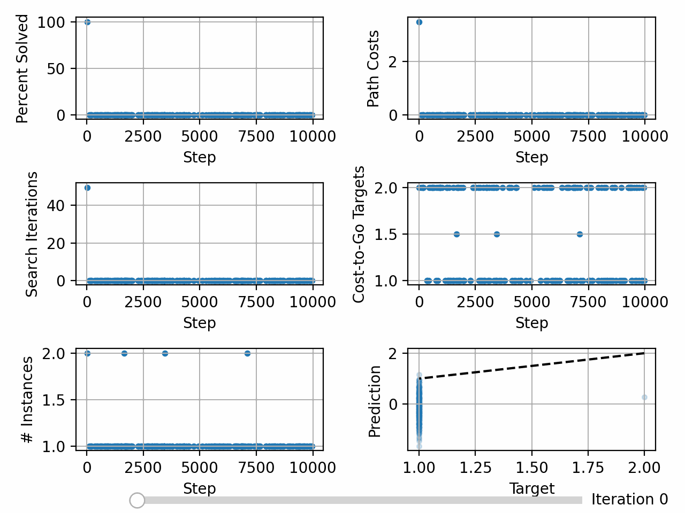

Balancing Training Data Difficulty¶
Although problem instance generation need not use the specified number of steps when generating problem instances, some implementations that do can use the number of steps used to generate a instance as an approximation of the difficulty of that problem instance. If the maximum number of steps is too small, then the heuristic function will not generalize to more difficult problems. If the maximum number of steps is too large, then the heuristic function may not see enough solved instances during training, resulting in increasingly large cost-to-go targets.
To address this, the maximum number of steps can be initialized to 1 and doubled everytime the average percentage of problems solved reached 50% until a pre-determined absolute maximum number of steps is reached.
We will experiment with the 6x6 sliding tile puzzle (i.e. the 35-puzzle) when training with a maximum number of steps of 10,000.
Without Balancing¶
deepxube train --domain npuzzle.6 --heur resnet_fc.200H_2B_bn --heur_type V --pathfind graph_v --step_max 10000 --up_itrs 100 --search_itrs 100 --backup -1 --procs 2 --batch_size 200 --max_itrs 5000 --dir tutorial/npuzzle6/10000sm/
device: cpu, devices: [], on_gpu: False
ResnetFCHeur(
(one_hots): ModuleList(
(0): OneHot()
)
(heur): Sequential(
(0): Linear(in_features=1296, out_features=200, bias=True)
(1): ResnetModel(
(blocks): ModuleList(
(0-1): 2 x ModuleList(
(0): FullyConnectedModel(
(layers): ModuleList(
(0): ModuleList(
(0): Linear(in_features=200, out_features=200, bias=True)
(1): BatchNorm1d(200, eps=1e-05, momentum=0.1, affine=True, track_running_stats=True)
(2): ReLU()
)
(1): ModuleList(
(0): Linear(in_features=200, out_features=200, bias=True)
(1): BatchNorm1d(200, eps=1e-05, momentum=0.1, affine=True, track_running_stats=True)
(2): LinearAct()
)
)
)
)
)
(act_fns): ModuleList(
(0-1): 2 x ReLU()
)
)
(2): Linear(in_features=200, out_features=1, bias=True)
)
)
Number of trainable parameters: 422,001
Initializing data buffer with max size 20,000
Input array sizes:
index: 0, dtype: uint8, shape: (36,)
index: 1, dtype: float64, shape: ()
Data buffer initialized. Time: 0.00012683868408203125
UpdateHeurVRLKeepGoal(UpArgs(procs=2, up_itrs=100, step_max=10000, search_itrs=100, ub_heur_solns=False, backup=-1, policy_rand_prob=0.0, up_gen_itrs=None, up_batch_size=100, nnet_batch_size=20000, sync_main=False, v=False))
GraphSearchHeurNodeActsEnum(batch_size=1, weight=1.0, eps=0.0)
TrainArgs(batch_size=200, max_itrs=5000, balance_steps=False, rb=0, loss_thresh=inf, targ_up_searches=0, skip_heur=False, skip_policy=False, checkpoint=0, grad_accum=1, display=100)
NPuzzle(dim=6)
Getting Data - itr: 0, update_num: 0, targ_update: 0, num_gen: 20,000
Times - steps_gen: 0.02, inst_info: 0.00, inst_add: 0.00, update_perf: 0.00, backup: 0.02, get_tr_data: 0.00, to_np: 0.01, put: 0.00, gc: 0.19, ->get_states: 1.98, ->pathfinding: 0.94, Tot: 3.15
(get_states): sample_goalstate_goal_pairs: 0.00, random_walk: 1.98, Tot: 1.98
(pathfinding): root: 0.00, pop: 0.00, is_solved: 0.02, goal: 0.00, expand: 0.13, nodes: 0.23, up_inst: 0.04, heur: 0.40, filt: 0.06, cost: 0.01, pushpop: 0.03, edges_next: 0.01, set_next: 0.00, Tot: 0.94
Data - %solved: 0.51, path_costs: 3.500, search_itrs: 49.500, cost-to-go (mean/min/max): 1.00/0.00/2.00
Itr: 0, loss: 1.59E+00, targ_ctg: 1.00, nnet_ctg: -0.13, Time: 1.92
Train - itrs: 100, loss: 1.54E-02, targ_updated: True
Times - up_start: 0.01, up_data: 1.68, up_end: 0.23, data_samp: 0.00, train: 0.29, save_net: 0.00, save_status: 0.00, Tot: 2.22
Getting Data - itr: 100, update_num: 1, targ_update: 1, num_gen: 20,000
Times - steps_gen: 0.00, inst_info: 0.00, inst_add: 0.00, update_perf: 0.00, backup: 0.02, get_tr_data: 0.00, to_np: 0.01, put: 0.00, gc: 0.34, ->get_states: 2.12, ->pathfinding: 1.10, Tot: 3.59
(get_states): sample_goalstate_goal_pairs: 0.00, random_walk: 2.12, Tot: 2.12
(pathfinding): root: 0.00, pop: 0.00, is_solved: 0.02, goal: 0.00, expand: 0.22, nodes: 0.23, up_inst: 0.04, heur: 0.44, filt: 0.07, cost: 0.02, pushpop: 0.04, edges_next: 0.01, set_next: 0.00, Tot: 1.10
Data - %solved: 0.00, path_costs: 0.000, search_itrs: 0.000, cost-to-go (mean/min/max): 1.92/1.57/3.13
Itr: 100, loss: 8.75E-01, targ_ctg: 1.92, nnet_ctg: 1.00, Time: 2.09
Train - itrs: 100, loss: 1.56E-02, targ_updated: True
Times - up_start: 0.00, up_data: 1.63, up_end: 0.45, data_samp: 0.00, train: 0.38, save_net: 0.00, save_status: 0.00, Tot: 2.48
Getting Data - itr: 200, update_num: 2, targ_update: 2, num_gen: 20,000
Times - steps_gen: 0.00, inst_info: 0.00, inst_add: 0.00, update_perf: 0.00, backup: 0.02, get_tr_data: 0.00, to_np: 0.01, put: 0.00, gc: 0.25, ->get_states: 1.96, ->pathfinding: 1.09, Tot: 3.34
(get_states): sample_goalstate_goal_pairs: 0.00, random_walk: 1.96, Tot: 1.96
(pathfinding): root: 0.00, pop: 0.00, is_solved: 0.02, goal: 0.00, expand: 0.12, nodes: 0.33, up_inst: 0.04, heur: 0.44, filt: 0.07, cost: 0.02, pushpop: 0.04, edges_next: 0.01, set_next: 0.00, Tot: 1.09
Data - %solved: 0.50, path_costs: 4.000, search_itrs: 67.000, cost-to-go (mean/min/max): 2.79/0.00/3.97
Itr: 200, loss: 8.17E-01, targ_ctg: 2.79, nnet_ctg: 1.90, Time: 1.87
Train - itrs: 100, loss: 1.51E-02, targ_updated: True
Times - up_start: 0.00, up_data: 1.56, up_end: 0.30, data_samp: 0.00, train: 0.34, save_net: 0.00, save_status: 0.00, Tot: 2.21
Getting Data - itr: 300, update_num: 3, targ_update: 3, num_gen: 20,000
Times - steps_gen: 0.00, inst_info: 0.00, inst_add: 0.00, update_perf: 0.00, backup: 0.02, get_tr_data: 0.00, to_np: 0.01, put: 0.00, gc: 0.21, ->get_states: 2.19, ->pathfinding: 1.07, Tot: 3.50
(get_states): sample_goalstate_goal_pairs: 0.00, random_walk: 2.19, Tot: 2.19
(pathfinding): root: 0.00, pop: 0.00, is_solved: 0.02, goal: 0.00, expand: 0.13, nodes: 0.28, up_inst: 0.04, heur: 0.45, filt: 0.07, cost: 0.02, pushpop: 0.04, edges_next: 0.01, set_next: 0.00, Tot: 1.07
Data - %solved: 0.00, path_costs: 0.000, search_itrs: 0.000, cost-to-go (mean/min/max): 3.71/3.39/4.87
Itr: 300, loss: 8.80E-01, targ_ctg: 3.71, nnet_ctg: 2.78, Time: 1.91
Train - itrs: 100, loss: 1.93E-02, targ_updated: True
Times - up_start: 0.00, up_data: 1.65, up_end: 0.25, data_samp: 0.00, train: 0.28, save_net: 0.00, save_status: 0.00, Tot: 2.20
Getting Data - itr: 400, update_num: 4, targ_update: 4, num_gen: 20,000
Times - steps_gen: 0.00, inst_info: 0.00, inst_add: 0.00, update_perf: 0.00, backup: 0.02, get_tr_data: 0.00, to_np: 0.01, put: 0.00, gc: 0.20, ->get_states: 1.94, ->pathfinding: 1.04, Tot: 3.20
(get_states): sample_goalstate_goal_pairs: 0.00, random_walk: 1.94, Tot: 1.94
(pathfinding): root: 0.00, pop: 0.00, is_solved: 0.02, goal: 0.00, expand: 0.27, nodes: 0.12, up_inst: 0.04, heur: 0.44, filt: 0.07, cost: 0.02, pushpop: 0.04, edges_next: 0.01, set_next: 0.00, Tot: 1.04
Data - %solved: 0.00, path_costs: 0.000, search_itrs: 0.000, cost-to-go (mean/min/max): 4.61/4.26/5.86
Itr: 400, loss: 8.55E-01, targ_ctg: 4.60, nnet_ctg: 3.68, Time: 1.83
Train - itrs: 100, loss: 1.78E-02, targ_updated: True
Times - up_start: 0.00, up_data: 1.59, up_end: 0.23, data_samp: 0.00, train: 0.29, save_net: 0.00, save_status: 0.00, Tot: 2.11
Getting Data - itr: 500, update_num: 5, targ_update: 5, num_gen: 20,000
Times - steps_gen: 0.00, inst_info: 0.00, inst_add: 0.00, update_perf: 0.00, backup: 0.02, get_tr_data: 0.00, to_np: 0.01, put: 0.00, gc: 0.22, ->get_states: 1.95, ->pathfinding: 1.10, Tot: 3.30
(get_states): sample_goalstate_goal_pairs: 0.00, random_walk: 1.95, Tot: 1.95
(pathfinding): root: 0.00, pop: 0.00, is_solved: 0.02, goal: 0.00, expand: 0.26, nodes: 0.17, up_inst: 0.04, heur: 0.45, filt: 0.07, cost: 0.02, pushpop: 0.04, edges_next: 0.01, set_next: 0.00, Tot: 1.10
Data - %solved: 0.00, path_costs: 0.000, search_itrs: 0.000, cost-to-go (mean/min/max): 5.50/5.18/6.78
Itr: 500, loss: 8.59E-01, targ_ctg: 5.51, nnet_ctg: 4.60, Time: 1.81
Train - itrs: 100, loss: 1.00E-02, targ_updated: True
Times - up_start: 0.00, up_data: 1.55, up_end: 0.26, data_samp: 0.00, train: 0.31, save_net: 0.00, save_status: 0.00, Tot: 2.13
Getting Data - itr: 600, update_num: 6, targ_update: 6, num_gen: 20,000
Times - steps_gen: 0.00, inst_info: 0.00, inst_add: 0.00, update_perf: 0.00, backup: 0.02, get_tr_data: 0.00, to_np: 0.01, put: 0.00, gc: 0.23, ->get_states: 1.95, ->pathfinding: 1.02, Tot: 3.23
(get_states): sample_goalstate_goal_pairs: 0.00, random_walk: 1.95, Tot: 1.95
(pathfinding): root: 0.00, pop: 0.00, is_solved: 0.02, goal: 0.00, expand: 0.21, nodes: 0.22, up_inst: 0.04, heur: 0.40, filt: 0.06, cost: 0.01, pushpop: 0.04, edges_next: 0.01, set_next: 0.00, Tot: 1.02
Data - %solved: 0.50, path_costs: 4.000, search_itrs: 70.000, cost-to-go (mean/min/max): 6.41/0.00/7.80
Itr: 600, loss: 9.11E-01, targ_ctg: 6.41, nnet_ctg: 5.47, Time: 1.78
Train - itrs: 100, loss: 1.23E-02, targ_updated: True
Times - up_start: 0.00, up_data: 1.52, up_end: 0.26, data_samp: 0.00, train: 0.30, save_net: 0.00, save_status: 0.00, Tot: 2.08
Getting Data - itr: 700, update_num: 7, targ_update: 7, num_gen: 20,000
Times - steps_gen: 0.00, inst_info: 0.00, inst_add: 0.00, update_perf: 0.00, backup: 0.02, get_tr_data: 0.00, to_np: 0.01, put: 0.00, gc: 0.31, ->get_states: 1.90, ->pathfinding: 1.01, Tot: 3.26
(get_states): sample_goalstate_goal_pairs: 0.00, random_walk: 1.90, Tot: 1.90
(pathfinding): root: 0.00, pop: 0.00, is_solved: 0.02, goal: 0.00, expand: 0.21, nodes: 0.18, up_inst: 0.04, heur: 0.42, filt: 0.07, cost: 0.02, pushpop: 0.04, edges_next: 0.01, set_next: 0.00, Tot: 1.01
Data - %solved: 0.00, path_costs: 0.000, search_itrs: 0.000, cost-to-go (mean/min/max): 7.27/6.88/8.52
Itr: 700, loss: 9.87E-01, targ_ctg: 7.28, nnet_ctg: 6.31, Time: 1.82
Train - itrs: 100, loss: 1.15E-02, targ_updated: True
Times - up_start: 0.00, up_data: 1.66, up_end: 0.16, data_samp: 0.00, train: 0.37, save_net: 0.00, save_status: 0.00, Tot: 2.19
Getting Data - itr: 800, update_num: 8, targ_update: 8, num_gen: 20,000
Times - steps_gen: 0.00, inst_info: 0.00, inst_add: 0.00, update_perf: 0.00, backup: 0.02, get_tr_data: 0.00, to_np: 0.01, put: 0.00, gc: 0.24, ->get_states: 2.04, ->pathfinding: 1.15, Tot: 3.46
(get_states): sample_goalstate_goal_pairs: 0.00, random_walk: 2.04, Tot: 2.04
(pathfinding): root: 0.00, pop: 0.00, is_solved: 0.02, goal: 0.00, expand: 0.17, nodes: 0.33, up_inst: 0.04, heur: 0.44, filt: 0.07, cost: 0.02, pushpop: 0.04, edges_next: 0.01, set_next: 0.00, Tot: 1.15
Data - %solved: 0.00, path_costs: 0.000, search_itrs: 0.000, cost-to-go (mean/min/max): 8.17/7.56/9.40
Itr: 800, loss: 1.13E+00, targ_ctg: 8.17, nnet_ctg: 7.12, Time: 1.92
Train - itrs: 100, loss: 1.40E-02, targ_updated: True
Times - up_start: 0.00, up_data: 1.67, up_end: 0.25, data_samp: 0.00, train: 0.31, save_net: 0.00, save_status: 0.00, Tot: 2.24
Getting Data - itr: 900, update_num: 9, targ_update: 9, num_gen: 20,000
Times - steps_gen: 0.00, inst_info: 0.00, inst_add: 0.00, update_perf: 0.00, backup: 0.02, get_tr_data: 0.00, to_np: 0.01, put: 0.00, gc: 0.22, ->get_states: 1.92, ->pathfinding: 1.00, Tot: 3.17
(get_states): sample_goalstate_goal_pairs: 0.00, random_walk: 1.92, Tot: 1.92
(pathfinding): root: 0.00, pop: 0.00, is_solved: 0.02, goal: 0.00, expand: 0.27, nodes: 0.15, up_inst: 0.04, heur: 0.40, filt: 0.06, cost: 0.01, pushpop: 0.04, edges_next: 0.01, set_next: 0.00, Tot: 1.00
Data - %solved: 0.00, path_costs: 0.000, search_itrs: 0.000, cost-to-go (mean/min/max): 9.02/8.49/10.29
Itr: 900, loss: 1.02E+00, targ_ctg: 9.02, nnet_ctg: 8.02, Time: 1.76
Train - itrs: 100, loss: 2.54E-02, targ_updated: True
Times - up_start: 0.00, up_data: 1.49, up_end: 0.26, data_samp: 0.00, train: 0.30, save_net: 0.00, save_status: 0.00, Tot: 2.05
Getting Data - itr: 1000, update_num: 10, targ_update: 10, num_gen: 20,000
Times - steps_gen: 0.00, inst_info: 0.00, inst_add: 0.00, update_perf: 0.00, backup: 0.02, get_tr_data: 0.00, to_np: 0.01, put: 0.00, gc: 0.20, ->get_states: 2.00, ->pathfinding: 1.07, Tot: 3.30
(get_states): sample_goalstate_goal_pairs: 0.00, random_walk: 2.00, Tot: 2.00
(pathfinding): root: 0.00, pop: 0.00, is_solved: 0.02, goal: 0.00, expand: 0.16, nodes: 0.31, up_inst: 0.04, heur: 0.41, filt: 0.06, cost: 0.01, pushpop: 0.04, edges_next: 0.01, set_next: 0.00, Tot: 1.07
Data - %solved: 0.50, path_costs: 4.000, search_itrs: 83.000, cost-to-go (mean/min/max): 9.89/0.00/11.22
Itr: 1000, loss: 1.08E+00, targ_ctg: 9.89, nnet_ctg: 8.86, Time: 1.85
Train - itrs: 100, loss: 2.79E-02, targ_updated: True
Times - up_start: 0.00, up_data: 1.60, up_end: 0.24, data_samp: 0.00, train: 0.30, save_net: 0.00, save_status: 0.00, Tot: 2.15
Getting Data - itr: 1100, update_num: 11, targ_update: 11, num_gen: 20,000
Times - steps_gen: 0.00, inst_info: 0.00, inst_add: 0.00, update_perf: 0.00, backup: 0.02, get_tr_data: 0.00, to_np: 0.01, put: 0.00, gc: 0.22, ->get_states: 1.91, ->pathfinding: 1.01, Tot: 3.17
(get_states): sample_goalstate_goal_pairs: 0.00, random_walk: 1.91, Tot: 1.91
(pathfinding): root: 0.00, pop: 0.00, is_solved: 0.02, goal: 0.00, expand: 0.29, nodes: 0.11, up_inst: 0.04, heur: 0.42, filt: 0.06, cost: 0.01, pushpop: 0.04, edges_next: 0.01, set_next: 0.00, Tot: 1.01
Data - %solved: 0.00, path_costs: 0.000, search_itrs: 0.000, cost-to-go (mean/min/max): 10.75/10.05/12.14
Itr: 1100, loss: 1.08E+00, targ_ctg: 10.74, nnet_ctg: 9.71, Time: 1.81
Train - itrs: 100, loss: 2.44E-02, targ_updated: True
Times - up_start: 0.00, up_data: 1.57, up_end: 0.23, data_samp: 0.00, train: 0.29, save_net: 0.00, save_status: 0.00, Tot: 2.11
Getting Data - itr: 1200, update_num: 12, targ_update: 12, num_gen: 20,000
Times - steps_gen: 0.00, inst_info: 0.00, inst_add: 0.00, update_perf: 0.00, backup: 0.02, get_tr_data: 0.00, to_np: 0.01, put: 0.00, gc: 0.30, ->get_states: 1.97, ->pathfinding: 1.08, Tot: 3.39
(get_states): sample_goalstate_goal_pairs: 0.00, random_walk: 1.97, Tot: 1.97
(pathfinding): root: 0.00, pop: 0.00, is_solved: 0.02, goal: 0.00, expand: 0.20, nodes: 0.25, up_inst: 0.04, heur: 0.43, filt: 0.07, cost: 0.02, pushpop: 0.04, edges_next: 0.01, set_next: 0.00, Tot: 1.08
Data - %solved: 0.00, path_costs: 0.000, search_itrs: 0.000, cost-to-go (mean/min/max): 11.59/10.74/12.96
Itr: 1200, loss: 1.20E+00, targ_ctg: 11.58, nnet_ctg: 10.51, Time: 1.87
Train - itrs: 100, loss: 1.93E-02, targ_updated: True
Times - up_start: 0.00, up_data: 1.56, up_end: 0.31, data_samp: 0.00, train: 0.31, save_net: 0.00, save_status: 0.00, Tot: 2.19
Getting Data - itr: 1300, update_num: 13, targ_update: 13, num_gen: 20,000
Times - steps_gen: 0.00, inst_info: 0.00, inst_add: 0.00, update_perf: 0.00, backup: 0.02, get_tr_data: 0.00, to_np: 0.01, put: 0.00, gc: 0.35, ->get_states: 1.93, ->pathfinding: 1.12, Tot: 3.43
(get_states): sample_goalstate_goal_pairs: 0.00, random_walk: 1.93, Tot: 1.93
(pathfinding): root: 0.00, pop: 0.00, is_solved: 0.02, goal: 0.00, expand: 0.25, nodes: 0.25, up_inst: 0.04, heur: 0.43, filt: 0.07, cost: 0.01, pushpop: 0.04, edges_next: 0.01, set_next: 0.00, Tot: 1.12
Data - %solved: 0.00, path_costs: 0.000, search_itrs: 0.000, cost-to-go (mean/min/max): 12.46/11.74/13.95
Itr: 1300, loss: 9.75E-01, targ_ctg: 12.46, nnet_ctg: 11.49, Time: 1.94
Train - itrs: 100, loss: 1.36E-02, targ_updated: True
Times - up_start: 0.00, up_data: 1.60, up_end: 0.33, data_samp: 0.00, train: 0.31, save_net: 0.00, save_status: 0.00, Tot: 2.25
Getting Data - itr: 1400, update_num: 14, targ_update: 14, num_gen: 20,000
Times - steps_gen: 0.00, inst_info: 0.00, inst_add: 0.00, update_perf: 0.00, backup: 0.02, get_tr_data: 0.00, to_np: 0.01, put: 0.00, gc: 0.23, ->get_states: 1.95, ->pathfinding: 1.09, Tot: 3.29
(get_states): sample_goalstate_goal_pairs: 0.00, random_walk: 1.95, Tot: 1.95
(pathfinding): root: 0.00, pop: 0.00, is_solved: 0.02, goal: 0.00, expand: 0.25, nodes: 0.24, up_inst: 0.04, heur: 0.41, filt: 0.06, cost: 0.01, pushpop: 0.04, edges_next: 0.01, set_next: 0.00, Tot: 1.09
Data - %solved: 0.00, path_costs: 0.000, search_itrs: 0.000, cost-to-go (mean/min/max): 13.31/12.60/14.75
Itr: 1400, loss: 9.23E-01, targ_ctg: 13.30, nnet_ctg: 12.35, Time: 1.82
Train - itrs: 100, loss: 2.17E-02, targ_updated: True
Times - up_start: 0.00, up_data: 1.57, up_end: 0.24, data_samp: 0.00, train: 0.28, save_net: 0.00, save_status: 0.00, Tot: 2.10
Getting Data - itr: 1500, update_num: 15, targ_update: 15, num_gen: 20,000
Times - steps_gen: 0.00, inst_info: 0.00, inst_add: 0.00, update_perf: 0.00, backup: 0.02, get_tr_data: 0.00, to_np: 0.01, put: 0.00, gc: 0.21, ->get_states: 1.94, ->pathfinding: 0.95, Tot: 3.12
(get_states): sample_goalstate_goal_pairs: 0.00, random_walk: 1.94, Tot: 1.94
(pathfinding): root: 0.00, pop: 0.00, is_solved: 0.02, goal: 0.00, expand: 0.18, nodes: 0.19, up_inst: 0.04, heur: 0.38, filt: 0.06, cost: 0.01, pushpop: 0.04, edges_next: 0.01, set_next: 0.00, Tot: 0.95
Data - %solved: 0.00, path_costs: 0.000, search_itrs: 0.000, cost-to-go (mean/min/max): 14.16/13.59/15.53
Itr: 1500, loss: 1.17E+00, targ_ctg: 14.16, nnet_ctg: 13.09, Time: 1.73
Train - itrs: 100, loss: 1.52E-02, targ_updated: True
Times - up_start: 0.00, up_data: 1.47, up_end: 0.25, data_samp: 0.00, train: 0.33, save_net: 0.00, save_status: 0.00, Tot: 2.06
Getting Data - itr: 1600, update_num: 16, targ_update: 16, num_gen: 20,000
Times - steps_gen: 0.00, inst_info: 0.00, inst_add: 0.00, update_perf: 0.00, backup: 0.02, get_tr_data: 0.00, to_np: 0.01, put: 0.00, gc: 0.20, ->get_states: 1.94, ->pathfinding: 1.06, Tot: 3.23
(get_states): sample_goalstate_goal_pairs: 0.00, random_walk: 1.94, Tot: 1.94
(pathfinding): root: 0.00, pop: 0.00, is_solved: 0.02, goal: 0.00, expand: 0.29, nodes: 0.18, up_inst: 0.04, heur: 0.40, filt: 0.06, cost: 0.01, pushpop: 0.04, edges_next: 0.01, set_next: 0.00, Tot: 1.06
Data - %solved: 0.00, path_costs: 0.000, search_itrs: 0.000, cost-to-go (mean/min/max): 15.05/14.36/16.53
Itr: 1600, loss: 9.90E-01, targ_ctg: 15.04, nnet_ctg: 14.06, Time: 1.80
Train - itrs: 100, loss: 2.88E-02, targ_updated: True
Times - up_start: 0.00, up_data: 1.57, up_end: 0.23, data_samp: 0.00, train: 0.28, save_net: 0.00, save_status: 0.00, Tot: 2.09
Getting Data - itr: 1700, update_num: 17, targ_update: 17, num_gen: 20,000
Times - steps_gen: 0.00, inst_info: 0.00, inst_add: 0.00, update_perf: 0.00, backup: 0.02, get_tr_data: 0.00, to_np: 0.01, put: 0.00, gc: 0.25, ->get_states: 1.92, ->pathfinding: 1.04, Tot: 3.25
(get_states): sample_goalstate_goal_pairs: 0.00, random_walk: 1.92, Tot: 1.92
(pathfinding): root: 0.00, pop: 0.00, is_solved: 0.02, goal: 0.00, expand: 0.22, nodes: 0.20, up_inst: 0.04, heur: 0.43, filt: 0.07, cost: 0.01, pushpop: 0.04, edges_next: 0.01, set_next: 0.00, Tot: 1.04
Data - %solved: 0.00, path_costs: 0.000, search_itrs: 0.000, cost-to-go (mean/min/max): 15.94/15.39/17.28
Itr: 1700, loss: 1.08E+00, targ_ctg: 15.97, nnet_ctg: 14.94, Time: 1.80
Train - itrs: 100, loss: 2.93E-02, targ_updated: True
Times - up_start: 0.00, up_data: 1.52, up_end: 0.28, data_samp: 0.00, train: 0.28, save_net: 0.00, save_status: 0.00, Tot: 2.09
Getting Data - itr: 1800, update_num: 18, targ_update: 18, num_gen: 20,000
Times - steps_gen: 0.00, inst_info: 0.00, inst_add: 0.00, update_perf: 0.00, backup: 0.02, get_tr_data: 0.00, to_np: 0.01, put: 0.00, gc: 0.23, ->get_states: 1.94, ->pathfinding: 1.02, Tot: 3.23
(get_states): sample_goalstate_goal_pairs: 0.00, random_walk: 1.94, Tot: 1.94
(pathfinding): root: 0.00, pop: 0.00, is_solved: 0.02, goal: 0.00, expand: 0.28, nodes: 0.14, up_inst: 0.04, heur: 0.41, filt: 0.07, cost: 0.01, pushpop: 0.04, edges_next: 0.01, set_next: 0.00, Tot: 1.02
Data - %solved: 0.00, path_costs: 0.000, search_itrs: 0.000, cost-to-go (mean/min/max): 16.75/16.10/18.14
Itr: 1800, loss: 9.18E-01, targ_ctg: 16.73, nnet_ctg: 15.78, Time: 1.78
Train - itrs: 100, loss: 2.41E-02, targ_updated: True
Times - up_start: 0.00, up_data: 1.51, up_end: 0.26, data_samp: 0.00, train: 0.29, save_net: 0.00, save_status: 0.00, Tot: 2.07
Getting Data - itr: 1900, update_num: 19, targ_update: 19, num_gen: 20,000
Times - steps_gen: 0.00, inst_info: 0.00, inst_add: 0.00, update_perf: 0.00, backup: 0.02, get_tr_data: 0.00, to_np: 0.01, put: 0.00, gc: 0.35, ->get_states: 2.12, ->pathfinding: 1.18, Tot: 3.68
(get_states): sample_goalstate_goal_pairs: 0.00, random_walk: 2.12, Tot: 2.12
(pathfinding): root: 0.00, pop: 0.00, is_solved: 0.02, goal: 0.00, expand: 0.25, nodes: 0.23, up_inst: 0.04, heur: 0.48, filt: 0.07, cost: 0.02, pushpop: 0.04, edges_next: 0.01, set_next: 0.00, Tot: 1.18
Data - %solved: 0.51, path_costs: 1.500, search_itrs: 12.833, cost-to-go (mean/min/max): 17.60/0.00/18.89
Itr: 1900, loss: 1.17E+00, targ_ctg: 17.62, nnet_ctg: 16.54, Time: 2.05
Train - itrs: 100, loss: 6.84E-02, targ_updated: True
Times - up_start: 0.00, up_data: 1.84, up_end: 0.20, data_samp: 0.00, train: 0.29, save_net: 0.00, save_status: 0.00, Tot: 2.34
Getting Data - itr: 2000, update_num: 20, targ_update: 20, num_gen: 20,000
Times - steps_gen: 0.00, inst_info: 0.00, inst_add: 0.00, update_perf: 0.00, backup: 0.02, get_tr_data: 0.00, to_np: 0.01, put: 0.00, gc: 0.20, ->get_states: 1.95, ->pathfinding: 1.00, Tot: 3.18
(get_states): sample_goalstate_goal_pairs: 0.00, random_walk: 1.95, Tot: 1.95
(pathfinding): root: 0.00, pop: 0.00, is_solved: 0.02, goal: 0.00, expand: 0.24, nodes: 0.18, up_inst: 0.04, heur: 0.40, filt: 0.06, cost: 0.01, pushpop: 0.03, edges_next: 0.01, set_next: 0.00, Tot: 1.00
Data - %solved: 0.00, path_costs: 0.000, search_itrs: 0.000, cost-to-go (mean/min/max): 18.48/15.48/20.02
Itr: 2000, loss: 1.11E+00, targ_ctg: 18.49, nnet_ctg: 17.48, Time: 1.77
Train - itrs: 100, loss: 5.16E-02, targ_updated: True
Times - up_start: 0.00, up_data: 1.54, up_end: 0.23, data_samp: 0.00, train: 0.33, save_net: 0.00, save_status: 0.00, Tot: 2.11
Getting Data - itr: 2100, update_num: 21, targ_update: 21, num_gen: 20,000
Times - steps_gen: 0.00, inst_info: 0.00, inst_add: 0.00, update_perf: 0.00, backup: 0.02, get_tr_data: 0.00, to_np: 0.01, put: 0.00, gc: 0.28, ->get_states: 1.95, ->pathfinding: 1.02, Tot: 3.28
(get_states): sample_goalstate_goal_pairs: 0.00, random_walk: 1.95, Tot: 1.95
(pathfinding): root: 0.00, pop: 0.00, is_solved: 0.02, goal: 0.00, expand: 0.35, nodes: 0.08, up_inst: 0.04, heur: 0.39, filt: 0.07, cost: 0.01, pushpop: 0.04, edges_next: 0.01, set_next: 0.00, Tot: 1.02
Data - %solved: 0.00, path_costs: 0.000, search_itrs: 0.000, cost-to-go (mean/min/max): 19.36/15.16/20.87
Itr: 2100, loss: 1.30E+00, targ_ctg: 19.33, nnet_ctg: 18.20, Time: 1.80
Train - itrs: 100, loss: 2.82E-02, targ_updated: True
Times - up_start: 0.00, up_data: 1.65, up_end: 0.15, data_samp: 0.00, train: 0.28, save_net: 0.00, save_status: 0.00, Tot: 2.09
Getting Data - itr: 2200, update_num: 22, targ_update: 22, num_gen: 20,000
Times - steps_gen: 0.00, inst_info: 0.00, inst_add: 0.00, update_perf: 0.00, backup: 0.02, get_tr_data: 0.00, to_np: 0.01, put: 0.10, gc: 0.26, ->get_states: 1.93, ->pathfinding: 1.00, Tot: 3.32
(get_states): sample_goalstate_goal_pairs: 0.00, random_walk: 1.93, Tot: 1.93
(pathfinding): root: 0.00, pop: 0.00, is_solved: 0.02, goal: 0.00, expand: 0.16, nodes: 0.24, up_inst: 0.04, heur: 0.41, filt: 0.07, cost: 0.01, pushpop: 0.04, edges_next: 0.01, set_next: 0.00, Tot: 1.00
Data - %solved: 0.00, path_costs: 0.000, search_itrs: 0.000, cost-to-go (mean/min/max): 20.27/17.97/21.73
Itr: 2200, loss: 8.99E-01, targ_ctg: 20.26, nnet_ctg: 19.32, Time: 1.83
Train - itrs: 100, loss: 2.36E-02, targ_updated: True
Times - up_start: 0.00, up_data: 1.57, up_end: 0.25, data_samp: 0.00, train: 0.28, save_net: 0.00, save_status: 0.00, Tot: 2.11
Getting Data - itr: 2300, update_num: 23, targ_update: 23, num_gen: 20,000
Times - steps_gen: 0.00, inst_info: 0.00, inst_add: 0.00, update_perf: 0.00, backup: 0.02, get_tr_data: 0.00, to_np: 0.01, put: 0.00, gc: 0.23, ->get_states: 1.94, ->pathfinding: 1.04, Tot: 3.24
(get_states): sample_goalstate_goal_pairs: 0.00, random_walk: 1.94, Tot: 1.94
(pathfinding): root: 0.00, pop: 0.00, is_solved: 0.02, goal: 0.00, expand: 0.30, nodes: 0.17, up_inst: 0.04, heur: 0.38, filt: 0.06, cost: 0.01, pushpop: 0.04, edges_next: 0.01, set_next: 0.00, Tot: 1.04
Data - %solved: 0.00, path_costs: 0.000, search_itrs: 0.000, cost-to-go (mean/min/max): 21.12/18.01/22.49
Itr: 2300, loss: 1.27E+00, targ_ctg: 21.12, nnet_ctg: 20.00, Time: 1.79
Train - itrs: 100, loss: 3.10E-02, targ_updated: True
Times - up_start: 0.00, up_data: 1.55, up_end: 0.23, data_samp: 0.00, train: 0.28, save_net: 0.00, save_status: 0.00, Tot: 2.07
Getting Data - itr: 2400, update_num: 24, targ_update: 24, num_gen: 20,000
Times - steps_gen: 0.00, inst_info: 0.00, inst_add: 0.00, update_perf: 0.00, backup: 0.02, get_tr_data: 0.00, to_np: 0.01, put: 0.00, gc: 0.23, ->get_states: 1.95, ->pathfinding: 1.01, Tot: 3.22
(get_states): sample_goalstate_goal_pairs: 0.00, random_walk: 1.95, Tot: 1.95
(pathfinding): root: 0.00, pop: 0.00, is_solved: 0.02, goal: 0.00, expand: 0.07, nodes: 0.32, up_inst: 0.04, heur: 0.42, filt: 0.07, cost: 0.01, pushpop: 0.04, edges_next: 0.01, set_next: 0.00, Tot: 1.01
Data - %solved: 0.50, path_costs: 4.000, search_itrs: 15.000, cost-to-go (mean/min/max): 22.04/0.00/23.53
Itr: 2400, loss: 1.01E+00, targ_ctg: 22.06, nnet_ctg: 21.07, Time: 1.78
Train - itrs: 100, loss: 8.86E-02, targ_updated: True
Times - up_start: 0.00, up_data: 1.51, up_end: 0.26, data_samp: 0.00, train: 0.28, save_net: 0.00, save_status: 0.00, Tot: 2.06
Getting Data - itr: 2500, update_num: 25, targ_update: 25, num_gen: 20,000
Times - steps_gen: 0.00, inst_info: 0.00, inst_add: 0.00, update_perf: 0.00, backup: 0.02, get_tr_data: 0.00, to_np: 0.01, put: 0.00, gc: 0.30, ->get_states: 1.93, ->pathfinding: 1.04, Tot: 3.31
(get_states): sample_goalstate_goal_pairs: 0.00, random_walk: 1.93, Tot: 1.93
(pathfinding): root: 0.00, pop: 0.00, is_solved: 0.02, goal: 0.00, expand: 0.22, nodes: 0.23, up_inst: 0.04, heur: 0.40, filt: 0.07, cost: 0.01, pushpop: 0.04, edges_next: 0.01, set_next: 0.00, Tot: 1.04
Data - %solved: 0.00, path_costs: 0.000, search_itrs: 0.000, cost-to-go (mean/min/max): 22.80/17.73/24.34
Itr: 2500, loss: 9.18E-01, targ_ctg: 22.84, nnet_ctg: 21.91, Time: 1.81
Train - itrs: 100, loss: 5.09E-02, targ_updated: True
Times - up_start: 0.00, up_data: 1.52, up_end: 0.29, data_samp: 0.00, train: 0.29, save_net: 0.00, save_status: 0.00, Tot: 2.10
Getting Data - itr: 2600, update_num: 26, targ_update: 26, num_gen: 20,000
Times - steps_gen: 0.00, inst_info: 0.00, inst_add: 0.00, update_perf: 0.00, backup: 0.02, get_tr_data: 0.00, to_np: 0.01, put: 0.00, gc: 0.19, ->get_states: 1.89, ->pathfinding: 0.95, Tot: 3.07
(get_states): sample_goalstate_goal_pairs: 0.00, random_walk: 1.89, Tot: 1.89
(pathfinding): root: 0.00, pop: 0.00, is_solved: 0.02, goal: 0.00, expand: 0.28, nodes: 0.11, up_inst: 0.04, heur: 0.38, filt: 0.06, cost: 0.01, pushpop: 0.03, edges_next: 0.01, set_next: 0.00, Tot: 0.95
Data - %solved: 0.50, path_costs: 5.000, search_itrs: 40.000, cost-to-go (mean/min/max): 23.70/0.00/25.45
Itr: 2600, loss: 8.56E-01, targ_ctg: 23.74, nnet_ctg: 22.83, Time: 1.75
Train - itrs: 100, loss: 3.26E-02, targ_updated: True
Times - up_start: 0.00, up_data: 1.53, up_end: 0.22, data_samp: 0.00, train: 0.30, save_net: 0.00, save_status: 0.00, Tot: 2.06
Getting Data - itr: 2700, update_num: 27, targ_update: 27, num_gen: 20,000
Times - steps_gen: 0.00, inst_info: 0.00, inst_add: 0.00, backup: 0.02, get_tr_data: 0.00, to_np: 0.01, update_perf: 0.00, put: 0.00, gc: 0.23, ->get_states: 2.12, ->pathfinding: 0.99, Tot: 3.38
(get_states): sample_goalstate_goal_pairs: 0.00, random_walk: 2.12, Tot: 2.12
(pathfinding): root: 0.00, pop: 0.00, is_solved: 0.02, goal: 0.00, expand: 0.13, nodes: 0.28, up_inst: 0.04, heur: 0.40, filt: 0.06, cost: 0.01, pushpop: 0.04, edges_next: 0.01, set_next: 0.00, Tot: 0.99
Data - %solved: 0.50, path_costs: 0.786, search_itrs: 1.786, cost-to-go (mean/min/max): 24.51/0.00/26.11
Itr: 2700, loss: 1.63E+00, targ_ctg: 24.51, nnet_ctg: 23.63, Time: 1.85
Train - itrs: 100, loss: 3.33E-02, targ_updated: True
Times - up_start: 0.00, up_data: 1.58, up_end: 0.26, data_samp: 0.00, train: 0.37, save_net: 0.00, save_status: 0.00, Tot: 2.23
Getting Data - itr: 2800, update_num: 28, targ_update: 28, num_gen: 20,000
Times - steps_gen: 0.00, inst_info: 0.00, inst_add: 0.00, update_perf: 0.00, backup: 0.02, get_tr_data: 0.00, to_np: 0.01, put: 0.00, gc: 0.23, ->get_states: 1.95, ->pathfinding: 1.01, Tot: 3.23
(get_states): sample_goalstate_goal_pairs: 0.00, random_walk: 1.95, Tot: 1.95
(pathfinding): root: 0.00, pop: 0.00, is_solved: 0.02, goal: 0.00, expand: 0.25, nodes: 0.15, up_inst: 0.04, heur: 0.42, filt: 0.07, cost: 0.01, pushpop: 0.04, edges_next: 0.01, set_next: 0.00, Tot: 1.01
Data - %solved: 0.00, path_costs: 0.000, search_itrs: 0.000, cost-to-go (mean/min/max): 25.39/6.62/26.98
Itr: 2800, loss: 1.38E+00, targ_ctg: 25.30, nnet_ctg: 24.14, Time: 1.80
Train - itrs: 100, loss: 4.50E-02, targ_updated: True
Times - up_start: 0.00, up_data: 1.51, up_end: 0.28, data_samp: 0.00, train: 0.36, save_net: 0.00, save_status: 0.00, Tot: 2.17
Getting Data - itr: 2900, update_num: 29, targ_update: 29, num_gen: 20,000
Times - steps_gen: 0.00, inst_info: 0.00, inst_add: 0.00, update_perf: 0.00, backup: 0.02, get_tr_data: 0.00, to_np: 0.01, put: 0.00, gc: 0.31, ->get_states: 2.05, ->pathfinding: 1.18, Tot: 3.57
(get_states): sample_goalstate_goal_pairs: 0.00, random_walk: 2.05, Tot: 2.05
(pathfinding): root: 0.00, pop: 0.00, is_solved: 0.02, goal: 0.00, expand: 0.34, nodes: 0.22, up_inst: 0.04, heur: 0.42, filt: 0.07, cost: 0.01, pushpop: 0.04, edges_next: 0.01, set_next: 0.00, Tot: 1.18
Data - %solved: 0.51, path_costs: 6.000, search_itrs: 11.667, cost-to-go (mean/min/max): 25.92/0.00/27.99
Itr: 2900, loss: 4.83E-01, targ_ctg: 25.97, nnet_ctg: 25.30, Time: 1.95
Train - itrs: 100, loss: 9.46E-02, targ_updated: True
Times - up_start: 0.00, up_data: 1.65, up_end: 0.30, data_samp: 0.00, train: 0.31, save_net: 0.00, save_status: 0.00, Tot: 2.26
Getting Data - itr: 3000, update_num: 30, targ_update: 30, num_gen: 20,000
Times - steps_gen: 0.00, inst_info: 0.00, inst_add: 0.00, update_perf: 0.00, backup: 0.02, get_tr_data: 0.00, to_np: 0.01, put: 0.00, gc: 0.34, ->get_states: 2.23, ->pathfinding: 1.49, Tot: 4.10
(get_states): sample_goalstate_goal_pairs: 0.00, random_walk: 2.23, Tot: 2.23
(pathfinding): root: 0.00, pop: 0.00, is_solved: 0.03, goal: 0.00, expand: 0.23, nodes: 0.36, up_inst: 0.05, heur: 0.64, filt: 0.09, cost: 0.02, pushpop: 0.05, edges_next: 0.01, set_next: 0.00, Tot: 1.49
Data - %solved: 0.50, path_costs: 7.000, search_itrs: 20.500, cost-to-go (mean/min/max): 27.01/0.00/28.68
Itr: 3000, loss: 7.52E-01, targ_ctg: 27.10, nnet_ctg: 26.26, Time: 2.34
Train - itrs: 100, loss: 7.01E-02, targ_updated: True
Times - up_start: 0.00, up_data: 1.96, up_end: 0.37, data_samp: 0.01, train: 0.41, save_net: 0.00, save_status: 0.00, Tot: 2.76
Getting Data - itr: 3100, update_num: 31, targ_update: 31, num_gen: 20,000
Times - steps_gen: 0.00, inst_info: 0.00, inst_add: 0.00, update_perf: 0.00, backup: 0.02, get_tr_data: 0.00, to_np: 0.01, put: 0.00, gc: 0.30, ->get_states: 2.12, ->pathfinding: 1.07, Tot: 3.52
(get_states): sample_goalstate_goal_pairs: 0.00, random_walk: 2.12, Tot: 2.12
(pathfinding): root: 0.00, pop: 0.00, is_solved: 0.02, goal: 0.00, expand: 0.31, nodes: 0.14, up_inst: 0.04, heur: 0.42, filt: 0.07, cost: 0.02, pushpop: 0.04, edges_next: 0.01, set_next: 0.00, Tot: 1.07
Data - %solved: 0.00, path_costs: 0.000, search_itrs: 0.000, cost-to-go (mean/min/max): 27.75/13.31/29.66
Itr: 3100, loss: 9.18E-01, targ_ctg: 27.72, nnet_ctg: 26.77, Time: 1.94
Train - itrs: 100, loss: 7.46E-02, targ_updated: True
Times - up_start: 0.00, up_data: 1.77, up_end: 0.16, data_samp: 0.00, train: 0.36, save_net: 0.00, save_status: 0.00, Tot: 2.30
Getting Data - itr: 3200, update_num: 32, targ_update: 32, num_gen: 20,000
Times - steps_gen: 0.00, inst_info: 0.00, inst_add: 0.00, update_perf: 0.00, backup: 0.02, get_tr_data: 0.00, to_np: 0.01, put: 0.00, gc: 0.30, ->get_states: 2.00, ->pathfinding: 1.14, Tot: 3.47
(get_states): sample_goalstate_goal_pairs: 0.00, random_walk: 2.00, Tot: 2.00
(pathfinding): root: 0.00, pop: 0.00, is_solved: 0.02, goal: 0.00, expand: 0.18, nodes: 0.34, up_inst: 0.04, heur: 0.42, filt: 0.07, cost: 0.01, pushpop: 0.04, edges_next: 0.01, set_next: 0.00, Tot: 1.14
Data - %solved: 0.00, path_costs: 0.000, search_itrs: 0.000, cost-to-go (mean/min/max): 28.51/6.85/30.52
Itr: 3200, loss: 1.02E+00, targ_ctg: 28.59, nnet_ctg: 27.60, Time: 1.93
Train - itrs: 100, loss: 2.84E-02, targ_updated: True
Times - up_start: 0.00, up_data: 1.63, up_end: 0.29, data_samp: 0.00, train: 0.29, save_net: 0.00, save_status: 0.00, Tot: 2.22
Getting Data - itr: 3300, update_num: 33, targ_update: 33, num_gen: 20,000
Times - steps_gen: 0.00, inst_info: 0.00, inst_add: 0.00, update_perf: 0.00, backup: 0.02, get_tr_data: 0.00, to_np: 0.01, put: 0.00, gc: 0.22, ->get_states: 1.98, ->pathfinding: 1.12, Tot: 3.34
(get_states): sample_goalstate_goal_pairs: 0.00, random_walk: 1.98, Tot: 1.98
(pathfinding): root: 0.00, pop: 0.00, is_solved: 0.02, goal: 0.00, expand: 0.19, nodes: 0.28, up_inst: 0.04, heur: 0.45, filt: 0.07, cost: 0.02, pushpop: 0.04, edges_next: 0.01, set_next: 0.00, Tot: 1.12
Data - %solved: 0.51, path_costs: 6.400, search_itrs: 19.000, cost-to-go (mean/min/max): 29.42/0.00/31.46
Itr: 3300, loss: 1.32E+00, targ_ctg: 29.49, nnet_ctg: 28.35, Time: 1.86
Train - itrs: 100, loss: 6.97E-02, targ_updated: True
Times - up_start: 0.00, up_data: 1.61, up_end: 0.24, data_samp: 0.00, train: 0.30, save_net: 0.00, save_status: 0.00, Tot: 2.15
Getting Data - itr: 3400, update_num: 34, targ_update: 34, num_gen: 20,000
Times - steps_gen: 0.00, inst_info: 0.00, inst_add: 0.00, update_perf: 0.00, backup: 0.02, get_tr_data: 0.00, to_np: 0.01, put: 0.10, gc: 0.36, ->get_states: 2.01, ->pathfinding: 0.99, Tot: 3.48
(get_states): sample_goalstate_goal_pairs: 0.00, random_walk: 2.01, Tot: 2.01
(pathfinding): root: 0.00, pop: 0.00, is_solved: 0.02, goal: 0.00, expand: 0.13, nodes: 0.28, up_inst: 0.04, heur: 0.40, filt: 0.06, cost: 0.01, pushpop: 0.04, edges_next: 0.01, set_next: 0.00, Tot: 0.99
Data - %solved: 0.00, path_costs: 0.000, search_itrs: 0.000, cost-to-go (mean/min/max): 30.49/20.74/32.07
Itr: 3400, loss: 7.89E-01, targ_ctg: 30.47, nnet_ctg: 29.61, Time: 1.96
Train - itrs: 100, loss: 3.16E-02, targ_updated: True
Times - up_start: 0.00, up_data: 1.60, up_end: 0.35, data_samp: 0.00, train: 0.41, save_net: 0.00, save_status: 0.00, Tot: 2.37
Getting Data - itr: 3500, update_num: 35, targ_update: 35, num_gen: 20,000
Times - steps_gen: 0.00, inst_info: 0.00, inst_add: 0.00, update_perf: 0.00, backup: 0.02, get_tr_data: 0.00, to_np: 0.01, put: 0.00, gc: 0.30, ->get_states: 2.04, ->pathfinding: 1.19, Tot: 3.56
(get_states): sample_goalstate_goal_pairs: 0.00, random_walk: 2.04, Tot: 2.04
(pathfinding): root: 0.00, pop: 0.00, is_solved: 0.02, goal: 0.00, expand: 0.20, nodes: 0.37, up_inst: 0.04, heur: 0.42, filt: 0.07, cost: 0.01, pushpop: 0.04, edges_next: 0.01, set_next: 0.00, Tot: 1.19
Data - %solved: 1.01, path_costs: 9.944, search_itrs: 27.222, cost-to-go (mean/min/max): 31.06/0.00/32.87
Itr: 3500, loss: 1.32E+00, targ_ctg: 31.02, nnet_ctg: 30.05, Time: 1.94
Train - itrs: 100, loss: 5.83E-01, targ_updated: True
Times - up_start: 0.00, up_data: 1.64, up_end: 0.29, data_samp: 0.00, train: 0.28, save_net: 0.00, save_status: 0.00, Tot: 2.22
Getting Data - itr: 3600, update_num: 36, targ_update: 36, num_gen: 20,000
Times - steps_gen: 0.00, inst_info: 0.00, inst_add: 0.00, update_perf: 0.00, backup: 0.02, get_tr_data: 0.00, to_np: 0.01, put: 0.00, gc: 0.23, ->get_states: 1.99, ->pathfinding: 0.95, Tot: 3.20
(get_states): sample_goalstate_goal_pairs: 0.00, random_walk: 1.99, Tot: 1.99
(pathfinding): root: 0.00, pop: 0.00, is_solved: 0.02, goal: 0.00, expand: 0.14, nodes: 0.24, up_inst: 0.04, heur: 0.38, filt: 0.06, cost: 0.01, pushpop: 0.04, edges_next: 0.01, set_next: 0.00, Tot: 0.95
Data - %solved: 0.50, path_costs: 1.457, search_itrs: 2.714, cost-to-go (mean/min/max): 32.23/0.00/34.09
Itr: 3600, loss: 1.57E+00, targ_ctg: 32.44, nnet_ctg: 31.20, Time: 1.75
Train - itrs: 100, loss: 5.54E-02, targ_updated: True
Times - up_start: 0.00, up_data: 1.50, up_end: 0.25, data_samp: 0.00, train: 0.30, save_net: 0.00, save_status: 0.00, Tot: 2.05
Getting Data - itr: 3700, update_num: 37, targ_update: 37, num_gen: 20,000
Times - steps_gen: 0.00, inst_info: 0.00, inst_add: 0.00, update_perf: 0.00, backup: 0.02, get_tr_data: 0.00, to_np: 0.01, put: 0.00, gc: 0.19, ->get_states: 2.37, ->pathfinding: 1.05, Tot: 3.64
(get_states): sample_goalstate_goal_pairs: 0.00, random_walk: 2.37, Tot: 2.37
(pathfinding): root: 0.00, pop: 0.00, is_solved: 0.02, goal: 0.00, expand: 0.27, nodes: 0.19, up_inst: 0.04, heur: 0.41, filt: 0.07, cost: 0.01, pushpop: 0.04, edges_next: 0.01, set_next: 0.00, Tot: 1.05
Data - %solved: 0.00, path_costs: 0.000, search_itrs: 0.000, cost-to-go (mean/min/max): 33.25/4.52/36.03
Itr: 3700, loss: 1.45E+00, targ_ctg: 33.26, nnet_ctg: 32.07, Time: 2.03
Train - itrs: 100, loss: 6.31E-02, targ_updated: True
Times - up_start: 0.00, up_data: 1.79, up_end: 0.23, data_samp: 0.00, train: 0.32, save_net: 0.00, save_status: 0.00, Tot: 2.34
Getting Data - itr: 3800, update_num: 38, targ_update: 38, num_gen: 20,000
Times - steps_gen: 0.00, inst_info: 0.00, inst_add: 0.00, update_perf: 0.00, backup: 0.02, get_tr_data: 0.00, to_np: 0.01, put: 0.00, gc: 0.27, ->get_states: 2.07, ->pathfinding: 0.96, Tot: 3.33
(get_states): sample_goalstate_goal_pairs: 0.00, random_walk: 2.07, Tot: 2.07
(pathfinding): root: 0.00, pop: 0.00, is_solved: 0.02, goal: 0.00, expand: 0.19, nodes: 0.19, up_inst: 0.04, heur: 0.39, filt: 0.06, cost: 0.01, pushpop: 0.04, edges_next: 0.01, set_next: 0.00, Tot: 0.96
Data - %solved: 0.00, path_costs: 0.000, search_itrs: 0.000, cost-to-go (mean/min/max): 34.17/10.60/35.87
Itr: 3800, loss: 1.08E+00, targ_ctg: 34.17, nnet_ctg: 33.15, Time: 1.83
Train - itrs: 100, loss: 1.75E-01, targ_updated: True
Times - up_start: 0.00, up_data: 1.55, up_end: 0.27, data_samp: 0.00, train: 0.32, save_net: 0.00, save_status: 0.00, Tot: 2.15
Getting Data - itr: 3900, update_num: 39, targ_update: 39, num_gen: 20,000
Times - steps_gen: 0.00, inst_info: 0.00, inst_add: 0.00, update_perf: 0.00, backup: 0.02, get_tr_data: 0.00, to_np: 0.01, put: 0.00, gc: 0.18, ->get_states: 1.94, ->pathfinding: 0.91, Tot: 3.06
(get_states): sample_goalstate_goal_pairs: 0.00, random_walk: 1.94, Tot: 1.94
(pathfinding): root: 0.00, pop: 0.00, is_solved: 0.02, goal: 0.00, expand: 0.14, nodes: 0.18, up_inst: 0.04, heur: 0.40, filt: 0.06, cost: 0.01, pushpop: 0.04, edges_next: 0.01, set_next: 0.00, Tot: 0.91
Data - %solved: 0.00, path_costs: 0.000, search_itrs: 0.000, cost-to-go (mean/min/max): 34.89/10.75/36.78
Itr: 3900, loss: 1.13E+00, targ_ctg: 35.03, nnet_ctg: 33.98, Time: 1.71
Train - itrs: 100, loss: 9.75E-02, targ_updated: True
Times - up_start: 0.00, up_data: 1.50, up_end: 0.21, data_samp: 0.00, train: 0.29, save_net: 0.00, save_status: 0.00, Tot: 2.01
Getting Data - itr: 4000, update_num: 40, targ_update: 40, num_gen: 20,000
Times - steps_gen: 0.00, inst_info: 0.00, inst_add: 0.00, update_perf: 0.00, backup: 0.02, get_tr_data: 0.00, to_np: 0.01, put: 0.00, gc: 0.20, ->get_states: 1.99, ->pathfinding: 1.01, Tot: 3.24
(get_states): sample_goalstate_goal_pairs: 0.00, random_walk: 1.99, Tot: 1.99
(pathfinding): root: 0.00, pop: 0.00, is_solved: 0.02, goal: 0.00, expand: 0.28, nodes: 0.16, up_inst: 0.04, heur: 0.38, filt: 0.06, cost: 0.01, pushpop: 0.04, edges_next: 0.01, set_next: 0.00, Tot: 1.01
Data - %solved: 0.00, path_costs: 0.000, search_itrs: 0.000, cost-to-go (mean/min/max): 35.72/3.35/37.69
Itr: 4000, loss: 1.18E+00, targ_ctg: 35.55, nnet_ctg: 34.49, Time: 1.83
Train - itrs: 100, loss: 7.70E-02, targ_updated: True
Times - up_start: 0.00, up_data: 1.58, up_end: 0.25, data_samp: 0.00, train: 0.29, save_net: 0.00, save_status: 0.00, Tot: 2.12
Getting Data - itr: 4100, update_num: 41, targ_update: 41, num_gen: 20,000
Times - steps_gen: 0.00, inst_info: 0.00, inst_add: 0.00, update_perf: 0.00, backup: 0.02, get_tr_data: 0.00, to_np: 0.01, put: 0.00, gc: 0.21, ->get_states: 1.95, ->pathfinding: 0.98, Tot: 3.17
(get_states): sample_goalstate_goal_pairs: 0.00, random_walk: 1.95, Tot: 1.95
(pathfinding): root: 0.00, pop: 0.00, is_solved: 0.02, goal: 0.00, expand: 0.21, nodes: 0.18, up_inst: 0.04, heur: 0.40, filt: 0.06, cost: 0.01, pushpop: 0.04, edges_next: 0.01, set_next: 0.00, Tot: 0.98
Data - %solved: 0.51, path_costs: 1.089, search_itrs: 2.200, cost-to-go (mean/min/max): 36.50/0.00/38.69
Itr: 4100, loss: 6.39E-01, targ_ctg: 36.49, nnet_ctg: 35.71, Time: 1.75
Train - itrs: 100, loss: 9.45E-02, targ_updated: True
Times - up_start: 0.00, up_data: 1.49, up_end: 0.25, data_samp: 0.00, train: 0.31, save_net: 0.00, save_status: 0.00, Tot: 2.06
Getting Data - itr: 4200, update_num: 42, targ_update: 42, num_gen: 20,000
Times - steps_gen: 0.00, inst_info: 0.00, inst_add: 0.00, update_perf: 0.00, backup: 0.02, get_tr_data: 0.00, to_np: 0.01, put: 0.00, gc: 0.17, ->get_states: 1.98, ->pathfinding: 0.91, Tot: 3.09
(get_states): sample_goalstate_goal_pairs: 0.00, random_walk: 1.98, Tot: 1.98
(pathfinding): root: 0.00, pop: 0.00, is_solved: 0.02, goal: 0.00, expand: 0.13, nodes: 0.19, up_inst: 0.04, heur: 0.41, filt: 0.06, cost: 0.01, pushpop: 0.04, edges_next: 0.01, set_next: 0.00, Tot: 0.91
Data - %solved: 0.50, path_costs: 19.000, search_itrs: 20.000, cost-to-go (mean/min/max): 37.21/0.00/39.38
Itr: 4200, loss: 1.07E+00, targ_ctg: 37.26, nnet_ctg: 36.30, Time: 1.74
Train - itrs: 100, loss: 6.09E-02, targ_updated: True
Times - up_start: 0.00, up_data: 1.52, up_end: 0.21, data_samp: 0.00, train: 0.29, save_net: 0.00, save_status: 0.00, Tot: 2.03
Getting Data - itr: 4300, update_num: 43, targ_update: 43, num_gen: 20,000
Times - steps_gen: 0.00, inst_info: 0.00, inst_add: 0.00, update_perf: 0.00, backup: 0.02, get_tr_data: 0.00, to_np: 0.01, put: 0.00, gc: 0.19, ->get_states: 1.97, ->pathfinding: 1.01, Tot: 3.20
(get_states): sample_goalstate_goal_pairs: 0.00, random_walk: 1.97, Tot: 1.97
(pathfinding): root: 0.00, pop: 0.00, is_solved: 0.02, goal: 0.00, expand: 0.10, nodes: 0.34, up_inst: 0.04, heur: 0.39, filt: 0.06, cost: 0.01, pushpop: 0.03, edges_next: 0.01, set_next: 0.00, Tot: 1.01
Data - %solved: 0.00, path_costs: 0.000, search_itrs: 0.000, cost-to-go (mean/min/max): 38.33/4.43/40.49
Itr: 4300, loss: 1.34E+00, targ_ctg: 38.43, nnet_ctg: 37.29, Time: 1.78
Train - itrs: 100, loss: 1.49E-01, targ_updated: True
Times - up_start: 0.00, up_data: 1.55, up_end: 0.22, data_samp: 0.00, train: 0.29, save_net: 0.00, save_status: 0.00, Tot: 2.07
Getting Data - itr: 4400, update_num: 44, targ_update: 44, num_gen: 20,000
Times - steps_gen: 0.00, inst_info: 0.00, inst_add: 0.00, update_perf: 0.00, backup: 0.02, get_tr_data: 0.00, to_np: 0.01, put: 0.00, gc: 0.20, ->get_states: 1.96, ->pathfinding: 1.01, Tot: 3.20
(get_states): sample_goalstate_goal_pairs: 0.00, random_walk: 1.96, Tot: 1.96
(pathfinding): root: 0.00, pop: 0.00, is_solved: 0.02, goal: 0.00, expand: 0.28, nodes: 0.17, up_inst: 0.04, heur: 0.38, filt: 0.06, cost: 0.01, pushpop: 0.04, edges_next: 0.01, set_next: 0.00, Tot: 1.01
Data - %solved: 0.00, path_costs: 0.000, search_itrs: 0.000, cost-to-go (mean/min/max): 39.23/15.14/41.22
Itr: 4400, loss: 8.04E-01, targ_ctg: 39.24, nnet_ctg: 38.37, Time: 1.80
Train - itrs: 100, loss: 1.27E-01, targ_updated: True
Times - up_start: 0.00, up_data: 1.56, up_end: 0.23, data_samp: 0.00, train: 0.28, save_net: 0.00, save_status: 0.00, Tot: 2.08
Getting Data - itr: 4500, update_num: 45, targ_update: 45, num_gen: 20,000
Times - steps_gen: 0.00, inst_info: 0.00, inst_add: 0.00, update_perf: 0.00, backup: 0.02, get_tr_data: 0.00, to_np: 0.01, put: 0.00, gc: 0.29, ->get_states: 1.94, ->pathfinding: 1.02, Tot: 3.28
(get_states): sample_goalstate_goal_pairs: 0.00, random_walk: 1.94, Tot: 1.94
(pathfinding): root: 0.00, pop: 0.00, is_solved: 0.02, goal: 0.00, expand: 0.13, nodes: 0.33, up_inst: 0.04, heur: 0.38, filt: 0.06, cost: 0.01, pushpop: 0.03, edges_next: 0.01, set_next: 0.00, Tot: 1.02
Data - %solved: 1.01, path_costs: 9.955, search_itrs: 11.500, cost-to-go (mean/min/max): 40.00/0.00/42.12
Itr: 4500, loss: 9.46E-01, targ_ctg: 39.79, nnet_ctg: 38.87, Time: 1.80
Train - itrs: 100, loss: 5.46E-02, targ_updated: True
Times - up_start: 0.00, up_data: 1.51, up_end: 0.28, data_samp: 0.00, train: 0.32, save_net: 0.00, save_status: 0.00, Tot: 2.12
Getting Data - itr: 4600, update_num: 46, targ_update: 46, num_gen: 20,000
Times - steps_gen: 0.00, inst_info: 0.00, inst_add: 0.00, update_perf: 0.00, backup: 0.02, get_tr_data: 0.00, to_np: 0.01, put: 0.00, gc: 0.19, ->get_states: 2.05, ->pathfinding: 1.03, Tot: 3.31
(get_states): sample_goalstate_goal_pairs: 0.00, random_walk: 2.05, Tot: 2.05
(pathfinding): root: 0.00, pop: 0.00, is_solved: 0.02, goal: 0.00, expand: 0.16, nodes: 0.29, up_inst: 0.04, heur: 0.40, filt: 0.06, cost: 0.01, pushpop: 0.03, edges_next: 0.01, set_next: 0.00, Tot: 1.03
Data - %solved: 0.51, path_costs: 21.000, search_itrs: 87.000, cost-to-go (mean/min/max): 40.54/0.00/42.78
Itr: 4600, loss: 5.91E-01, targ_ctg: 40.45, nnet_ctg: 39.72, Time: 1.85
Train - itrs: 100, loss: 6.30E-02, targ_updated: True
Times - up_start: 0.00, up_data: 1.61, up_end: 0.24, data_samp: 0.00, train: 0.29, save_net: 0.00, save_status: 0.00, Tot: 2.15
Getting Data - itr: 4700, update_num: 47, targ_update: 47, num_gen: 20,000
Times - steps_gen: 0.00, inst_info: 0.00, inst_add: 0.00, update_perf: 0.00, backup: 0.02, get_tr_data: 0.00, to_np: 0.01, put: 0.00, gc: 0.19, ->get_states: 2.00, ->pathfinding: 0.98, Tot: 3.21
(get_states): sample_goalstate_goal_pairs: 0.00, random_walk: 2.00, Tot: 2.00
(pathfinding): root: 0.00, pop: 0.00, is_solved: 0.02, goal: 0.00, expand: 0.20, nodes: 0.20, up_inst: 0.04, heur: 0.39, filt: 0.06, cost: 0.01, pushpop: 0.04, edges_next: 0.01, set_next: 0.00, Tot: 0.98
Data - %solved: 1.01, path_costs: 12.900, search_itrs: 14.267, cost-to-go (mean/min/max): 41.48/0.00/44.13
Itr: 4700, loss: 9.83E-01, targ_ctg: 41.57, nnet_ctg: 40.71, Time: 1.77
Train - itrs: 100, loss: 3.09E-01, targ_updated: True
Times - up_start: 0.00, up_data: 1.53, up_end: 0.23, data_samp: 0.00, train: 0.28, save_net: 0.00, save_status: 0.00, Tot: 2.05
Getting Data - itr: 4800, update_num: 48, targ_update: 48, num_gen: 20,000
Times - steps_gen: 0.00, inst_info: 0.00, inst_add: 0.00, update_perf: 0.00, backup: 0.02, get_tr_data: 0.00, to_np: 0.01, put: 0.00, gc: 0.19, ->get_states: 1.95, ->pathfinding: 0.93, Tot: 3.09
(get_states): sample_goalstate_goal_pairs: 0.00, random_walk: 1.95, Tot: 1.95
(pathfinding): root: 0.00, pop: 0.00, is_solved: 0.02, goal: 0.00, expand: 0.20, nodes: 0.16, up_inst: 0.04, heur: 0.38, filt: 0.06, cost: 0.01, pushpop: 0.03, edges_next: 0.01, set_next: 0.00, Tot: 0.93
Data - %solved: 0.50, path_costs: 18.500, search_itrs: 20.000, cost-to-go (mean/min/max): 42.58/0.00/45.14
Itr: 4800, loss: 7.75E-01, targ_ctg: 42.36, nnet_ctg: 41.53, Time: 1.75
Train - itrs: 100, loss: 4.94E-02, targ_updated: True
Times - up_start: 0.00, up_data: 1.54, up_end: 0.21, data_samp: 0.00, train: 0.35, save_net: 0.00, save_status: 0.00, Tot: 2.11
Getting Data - itr: 4900, update_num: 49, targ_update: 49, num_gen: 20,000
Times - steps_gen: 0.00, inst_info: 0.00, inst_add: 0.00, update_perf: 0.00, backup: 0.02, get_tr_data: 0.00, to_np: 0.01, put: 0.00, gc: 0.23, ->get_states: 2.15, ->pathfinding: 0.94, Tot: 3.36
(get_states): sample_goalstate_goal_pairs: 0.00, random_walk: 2.15, Tot: 2.15
(pathfinding): root: 0.00, pop: 0.00, is_solved: 0.02, goal: 0.00, expand: 0.21, nodes: 0.17, up_inst: 0.04, heur: 0.37, filt: 0.06, cost: 0.01, pushpop: 0.03, edges_next: 0.01, set_next: 0.00, Tot: 0.94
Data - %solved: 0.00, path_costs: 0.000, search_itrs: 0.000, cost-to-go (mean/min/max): 43.40/13.98/45.68
Itr: 4900, loss: 1.98E+00, targ_ctg: 43.51, nnet_ctg: 42.12, Time: 1.84
Train - itrs: 100, loss: 8.18E-02, targ_updated: True
Times - up_start: 0.00, up_data: 1.58, up_end: 0.26, data_samp: 0.00, train: 0.30, save_net: 0.00, save_status: 0.00, Tot: 2.15
Done
Note how there is rarely an instance that is solved, the cost-to-go continues to increase, and the percentage solved does not improve.
deepxube train_summary --dir tutorial/npuzzle6/10000sm/
{kind=link}

With Balancing¶
deepxube train --domain npuzzle.6 --heur resnet_fc.200H_2B_bn --heur_type V --pathfind graph_v --step_max 10000 --up_itrs 100 --search_itrs 100 --backup -1 --procs 2 --batch_size 200 --max_itrs 5000 --bal --dir tutorial/npuzzle6/10000sm_bal/
device: cpu, devices: [], on_gpu: False
ResnetFCHeur(
(one_hots): ModuleList(
(0): OneHot()
)
(heur): Sequential(
(0): Linear(in_features=1296, out_features=200, bias=True)
(1): ResnetModel(
(blocks): ModuleList(
(0-1): 2 x ModuleList(
(0): FullyConnectedModel(
(layers): ModuleList(
(0): ModuleList(
(0): Linear(in_features=200, out_features=200, bias=True)
(1): BatchNorm1d(200, eps=1e-05, momentum=0.1, affine=True, track_running_stats=True)
(2): ReLU()
)
(1): ModuleList(
(0): Linear(in_features=200, out_features=200, bias=True)
(1): BatchNorm1d(200, eps=1e-05, momentum=0.1, affine=True, track_running_stats=True)
(2): LinearAct()
)
)
)
)
)
(act_fns): ModuleList(
(0-1): 2 x ReLU()
)
)
(2): Linear(in_features=200, out_features=1, bias=True)
)
)
Number of trainable parameters: 422,001
Initializing data buffer with max size 20,000
Input array sizes:
index: 0, dtype: uint8, shape: (36,)
index: 1, dtype: float64, shape: ()
Data buffer initialized. Time: 0.0001652240753173828
UpdateHeurVRLKeepGoal(UpArgs(procs=2, up_itrs=100, step_max=10000, search_itrs=100, ub_heur_solns=False, backup=-1, policy_rand_prob=0.0, up_gen_itrs=None, up_batch_size=100, nnet_batch_size=20000, sync_main=False, v=False))
GraphSearchHeurNodeActsEnum(batch_size=1, weight=1.0, eps=0.0)
TrainArgs(batch_size=200, max_itrs=5000, balance_steps=True, rb=0, loss_thresh=inf, targ_up_searches=0, skip_heur=False, skip_policy=False, checkpoint=0, grad_accum=1, display=100)
NPuzzle(dim=6)
Getting Data - itr: 0, update_num: 0, targ_update: 0, num_gen: 20,000, step max (curr): 1
Times - steps_gen: 0.03, inst_info: 0.00, inst_add: 0.00, backup: 0.01, get_tr_data: 0.00, to_np: 0.01, update_perf: 0.01, put: 0.01, gc: 0.06, ->get_states: 0.05, ->pathfinding: 1.92, Tot: 2.09
(get_states): sample_goalstate_goal_pairs: 0.00, random_walk: 0.05, Tot: 0.05
(pathfinding): root: 0.00, pop: 0.01, is_solved: 0.01, goal: 0.00, expand: 0.23, nodes: 0.15, up_inst: 0.08, heur: 1.33, filt: 0.06, cost: 0.01, pushpop: 0.02, edges_next: 0.01, set_next: 0.00, Tot: 1.92
Data - %solved: 100.00, path_costs: 0.260, search_itrs: 1.393, cost-to-go (mean/min/max): 0.24/0.00/1.00
Itr: 0, loss: 6.75E-01, targ_ctg: 0.25, nnet_ctg: -0.07, Time: 1.46
Train - itrs: 100, loss: 3.77E-04, targ_updated: True
Times - up_start: 0.01, up_data: 1.23, up_end: 0.21, data_samp: 0.00, train: 0.30, save_net: 0.00, save_status: 0.00, Tot: 1.76
Getting Data - itr: 100, update_num: 1, targ_update: 1, num_gen: 20,000, step max (curr): 2
Times - steps_gen: 0.00, inst_info: 0.00, inst_add: 0.00, backup: 0.01, get_tr_data: 0.00, to_np: 0.01, update_perf: 0.01, put: 0.01, gc: 0.08, ->get_states: 0.06, ->pathfinding: 2.10, Tot: 2.27
(get_states): sample_goalstate_goal_pairs: 0.00, random_walk: 0.06, Tot: 0.06
(pathfinding): root: 0.00, pop: 0.01, is_solved: 0.01, goal: 0.00, expand: 0.24, nodes: 0.07, up_inst: 0.05, heur: 1.62, filt: 0.06, cost: 0.01, pushpop: 0.02, edges_next: 0.01, set_next: 0.00, Tot: 2.10
Data - %solved: 100.00, path_costs: 0.471, search_itrs: 1.538, cost-to-go (mean/min/max): 0.35/0.00/2.08
Itr: 100, loss: 9.83E-02, targ_ctg: 0.28, nnet_ctg: 0.24, Time: 1.33
Train - itrs: 100, loss: 1.13E-03, targ_updated: True
Times - up_start: 0.00, up_data: 1.14, up_end: 0.19, data_samp: 0.00, train: 0.34, save_net: 0.00, save_status: 0.00, Tot: 1.67
Getting Data - itr: 200, update_num: 2, targ_update: 2, num_gen: 20,000, step max (curr): 4
Times - steps_gen: 0.00, inst_info: 0.00, inst_add: 0.00, backup: 0.01, get_tr_data: 0.00, to_np: 0.01, update_perf: 0.01, put: 0.01, gc: 0.07, ->get_states: 0.08, ->pathfinding: 2.20, Tot: 2.39
(get_states): sample_goalstate_goal_pairs: 0.00, random_walk: 0.08, Tot: 0.08
(pathfinding): root: 0.00, pop: 0.00, is_solved: 0.01, goal: 0.00, expand: 0.19, nodes: 0.14, up_inst: 0.09, heur: 1.65, filt: 0.06, cost: 0.01, pushpop: 0.02, edges_next: 0.01, set_next: 0.00, Tot: 2.20
Data - %solved: 100.00, path_costs: 0.839, search_itrs: 2.125, cost-to-go (mean/min/max): 0.74/0.00/3.99
Itr: 200, loss: 1.99E-01, targ_ctg: 0.73, nnet_ctg: 0.52, Time: 1.36
Train - itrs: 100, loss: 7.36E-03, targ_updated: True
Times - up_start: 0.00, up_data: 1.19, up_end: 0.17, data_samp: 0.00, train: 0.31, save_net: 0.00, save_status: 0.00, Tot: 1.67
Getting Data - itr: 300, update_num: 3, targ_update: 3, num_gen: 20,000, step max (curr): 8
Times - steps_gen: 0.00, inst_info: 0.00, inst_add: 0.00, backup: 0.02, get_tr_data: 0.00, to_np: 0.01, update_perf: 0.00, put: 0.01, gc: 0.06, ->get_states: 0.10, ->pathfinding: 2.28, Tot: 2.49
(get_states): sample_goalstate_goal_pairs: 0.00, random_walk: 0.10, Tot: 0.10
(pathfinding): root: 0.00, pop: 0.00, is_solved: 0.02, goal: 0.00, expand: 0.18, nodes: 0.26, up_inst: 0.04, heur: 1.67, filt: 0.06, cost: 0.01, pushpop: 0.02, edges_next: 0.01, set_next: 0.00, Tot: 2.28
Data - %solved: 100.00, path_costs: 1.556, search_itrs: 4.364, cost-to-go (mean/min/max): 1.40/0.00/4.86
Itr: 300, loss: 7.21E-01, targ_ctg: 1.50, nnet_ctg: 0.85, Time: 1.42
Train - itrs: 100, loss: 1.83E-02, targ_updated: True
Times - up_start: 0.00, up_data: 1.24, up_end: 0.18, data_samp: 0.00, train: 0.30, save_net: 0.00, save_status: 0.00, Tot: 1.72
Getting Data - itr: 400, update_num: 4, targ_update: 4, num_gen: 20,000, step max (curr): 16
Times - steps_gen: 0.00, inst_info: 0.00, inst_add: 0.00, backup: 0.02, get_tr_data: 0.00, to_np: 0.01, update_perf: 0.00, put: 0.01, gc: 0.10, ->get_states: 0.14, ->pathfinding: 2.43, Tot: 2.72
(get_states): sample_goalstate_goal_pairs: 0.00, random_walk: 0.14, Tot: 0.14
(pathfinding): root: 0.00, pop: 0.00, is_solved: 0.02, goal: 0.00, expand: 0.20, nodes: 0.28, up_inst: 0.04, heur: 1.76, filt: 0.07, cost: 0.02, pushpop: 0.03, edges_next: 0.01, set_next: 0.00, Tot: 2.43
Data - %solved: 97.89, path_costs: 2.553, search_itrs: 7.321, cost-to-go (mean/min/max): 2.41/0.00/6.00
Itr: 400, loss: 1.00E+00, targ_ctg: 2.42, nnet_ctg: 1.61, Time: 1.54
Train - itrs: 100, loss: 2.53E-02, targ_updated: True
Times - up_start: 0.00, up_data: 1.33, up_end: 0.20, data_samp: 0.00, train: 0.31, save_net: 0.00, save_status: 0.00, Tot: 1.85
Getting Data - itr: 500, update_num: 5, targ_update: 5, num_gen: 20,000, step max (curr): 32
Times - steps_gen: 0.00, inst_info: 0.00, inst_add: 0.00, backup: 0.02, get_tr_data: 0.00, to_np: 0.01, update_perf: 0.00, put: 0.01, gc: 0.13, ->get_states: 0.13, ->pathfinding: 2.30, Tot: 2.60
(get_states): sample_goalstate_goal_pairs: 0.00, random_walk: 0.13, Tot: 0.13
(pathfinding): root: 0.00, pop: 0.00, is_solved: 0.02, goal: 0.00, expand: 0.27, nodes: 0.15, up_inst: 0.04, heur: 1.69, filt: 0.07, cost: 0.02, pushpop: 0.03, edges_next: 0.01, set_next: 0.00, Tot: 2.30
Data - %solved: 76.40, path_costs: 4.069, search_itrs: 14.560, cost-to-go (mean/min/max): 3.61/0.00/6.91
Itr: 500, loss: 1.17E+00, targ_ctg: 3.40, nnet_ctg: 2.41, Time: 1.47
Train - itrs: 100, loss: 2.06E-02, targ_updated: True
Times - up_start: 0.00, up_data: 1.28, up_end: 0.18, data_samp: 0.00, train: 0.31, save_net: 0.00, save_status: 0.00, Tot: 1.78
Getting Data - itr: 600, update_num: 6, targ_update: 6, num_gen: 20,000, step max (curr): 64
Times - steps_gen: 0.00, inst_info: 0.00, inst_add: 0.00, backup: 0.02, get_tr_data: 0.00, to_np: 0.01, update_perf: 0.00, put: 0.01, gc: 0.21, ->get_states: 0.13, ->pathfinding: 2.50, Tot: 2.88
(get_states): sample_goalstate_goal_pairs: 0.00, random_walk: 0.13, Tot: 0.13
(pathfinding): root: 0.00, pop: 0.00, is_solved: 0.02, goal: 0.00, expand: 0.22, nodes: 0.30, up_inst: 0.04, heur: 1.78, filt: 0.07, cost: 0.02, pushpop: 0.03, edges_next: 0.01, set_next: 0.00, Tot: 2.50
Data - %solved: 50.81, path_costs: 4.753, search_itrs: 16.603, cost-to-go (mean/min/max): 4.59/0.00/7.80
Itr: 600, loss: 1.55E+00, targ_ctg: 4.66, nnet_ctg: 3.51, Time: 1.67
Train - itrs: 100, loss: 8.53E-02, targ_updated: True
Times - up_start: 0.00, up_data: 1.35, up_end: 0.31, data_samp: 0.00, train: 0.29, save_net: 0.00, save_status: 0.00, Tot: 1.96
Getting Data - itr: 700, update_num: 7, targ_update: 7, num_gen: 20,000, step max (curr): 128
Times - steps_gen: 0.00, inst_info: 0.00, inst_add: 0.00, backup: 0.02, get_tr_data: 0.00, to_np: 0.01, update_perf: 0.00, put: 0.10, gc: 0.26, ->get_states: 0.09, ->pathfinding: 2.43, Tot: 2.91
(get_states): sample_goalstate_goal_pairs: 0.00, random_walk: 0.09, Tot: 0.09
(pathfinding): root: 0.00, pop: 0.00, is_solved: 0.02, goal: 0.00, expand: 0.23, nodes: 0.24, up_inst: 0.04, heur: 1.75, filt: 0.07, cost: 0.02, pushpop: 0.04, edges_next: 0.01, set_next: 0.00, Tot: 2.43
Data - %solved: 21.86, path_costs: 4.692, search_itrs: 13.674, cost-to-go (mean/min/max): 5.94/0.00/8.39
Itr: 700, loss: 2.74E+00, targ_ctg: 6.03, nnet_ctg: 4.45, Time: 1.64
Train - itrs: 100, loss: 4.31E-02, targ_updated: True
Times - up_start: 0.00, up_data: 1.35, up_end: 0.28, data_samp: 0.00, train: 0.32, save_net: 0.00, save_status: 0.00, Tot: 1.95
Getting Data - itr: 800, update_num: 8, targ_update: 8, num_gen: 20,000, step max (curr): 128
Times - steps_gen: 0.00, inst_info: 0.00, inst_add: 0.00, backup: 0.02, get_tr_data: 0.00, to_np: 0.01, update_perf: 0.00, put: 0.01, gc: 0.21, ->get_states: 0.08, ->pathfinding: 2.56, Tot: 2.90
(get_states): sample_goalstate_goal_pairs: 0.00, random_walk: 0.08, Tot: 0.08
(pathfinding): root: 0.00, pop: 0.00, is_solved: 0.02, goal: 0.00, expand: 0.24, nodes: 0.29, up_inst: 0.04, heur: 1.85, filt: 0.06, cost: 0.01, pushpop: 0.03, edges_next: 0.01, set_next: 0.00, Tot: 2.56
Data - %solved: 25.93, path_costs: 5.487, search_itrs: 15.323, cost-to-go (mean/min/max): 6.71/0.00/9.17
Itr: 800, loss: 7.65E-01, targ_ctg: 6.68, nnet_ctg: 5.90, Time: 1.62
Train - itrs: 100, loss: 6.86E-02, targ_updated: True
Times - up_start: 0.00, up_data: 1.36, up_end: 0.26, data_samp: 0.00, train: 0.29, save_net: 0.00, save_status: 0.00, Tot: 1.92
Getting Data - itr: 900, update_num: 9, targ_update: 9, num_gen: 20,000, step max (curr): 128
Times - steps_gen: 0.00, inst_info: 0.00, inst_add: 0.00, backup: 0.02, get_tr_data: 0.00, to_np: 0.01, update_perf: 0.00, put: 0.01, gc: 0.25, ->get_states: 0.11, ->pathfinding: 2.41, Tot: 2.80
(get_states): sample_goalstate_goal_pairs: 0.00, random_walk: 0.11, Tot: 0.11
(pathfinding): root: 0.00, pop: 0.00, is_solved: 0.02, goal: 0.00, expand: 0.30, nodes: 0.23, up_inst: 0.04, heur: 1.69, filt: 0.07, cost: 0.02, pushpop: 0.03, edges_next: 0.01, set_next: 0.00, Tot: 2.41
Data - %solved: 30.77, path_costs: 6.223, search_itrs: 16.583, cost-to-go (mean/min/max): 7.04/0.00/10.21
Itr: 900, loss: 6.14E-01, targ_ctg: 7.13, nnet_ctg: 6.46, Time: 1.57
Train - itrs: 100, loss: 1.44E-01, targ_updated: True
Times - up_start: 0.00, up_data: 1.30, up_end: 0.26, data_samp: 0.00, train: 0.30, save_net: 0.00, save_status: 0.00, Tot: 1.87
Getting Data - itr: 1000, update_num: 10, targ_update: 10, num_gen: 20,000, step max (curr): 128
Times - steps_gen: 0.00, inst_info: 0.00, inst_add: 0.00, backup: 0.02, get_tr_data: 0.00, to_np: 0.01, update_perf: 0.00, put: 0.01, gc: 0.25, ->get_states: 0.11, ->pathfinding: 2.45, Tot: 2.85
(get_states): sample_goalstate_goal_pairs: 0.00, random_walk: 0.11, Tot: 0.11
(pathfinding): root: 0.00, pop: 0.00, is_solved: 0.02, goal: 0.00, expand: 0.20, nodes: 0.34, up_inst: 0.04, heur: 1.71, filt: 0.07, cost: 0.02, pushpop: 0.04, edges_next: 0.01, set_next: 0.00, Tot: 2.45
Data - %solved: 33.71, path_costs: 6.804, search_itrs: 19.062, cost-to-go (mean/min/max): 8.06/0.00/11.04
Itr: 1000, loss: 7.18E-01, targ_ctg: 7.68, nnet_ctg: 6.88, Time: 1.59
Train - itrs: 100, loss: 4.52E-02, targ_updated: True
Times - up_start: 0.00, up_data: 1.32, up_end: 0.26, data_samp: 0.00, train: 0.33, save_net: 0.00, save_status: 0.00, Tot: 1.92
Getting Data - itr: 1100, update_num: 11, targ_update: 11, num_gen: 20,000, step max (curr): 128
Times - steps_gen: 0.00, inst_info: 0.00, inst_add: 0.00, backup: 0.02, get_tr_data: 0.00, to_np: 0.01, update_perf: 0.00, put: 0.01, gc: 0.24, ->get_states: 0.13, ->pathfinding: 2.46, Tot: 2.87
(get_states): sample_goalstate_goal_pairs: 0.00, random_walk: 0.13, Tot: 0.13
(pathfinding): root: 0.00, pop: 0.00, is_solved: 0.02, goal: 0.00, expand: 0.24, nodes: 0.29, up_inst: 0.04, heur: 1.73, filt: 0.07, cost: 0.01, pushpop: 0.03, edges_next: 0.01, set_next: 0.00, Tot: 2.46
Data - %solved: 34.42, path_costs: 6.537, search_itrs: 16.066, cost-to-go (mean/min/max): 8.22/0.00/11.79
Itr: 1100, loss: 3.62E-01, targ_ctg: 7.95, nnet_ctg: 7.73, Time: 1.60
Train - itrs: 100, loss: 7.25E-02, targ_updated: True
Times - up_start: 0.00, up_data: 1.33, up_end: 0.26, data_samp: 0.00, train: 0.31, save_net: 0.00, save_status: 0.00, Tot: 1.91
Getting Data - itr: 1200, update_num: 12, targ_update: 12, num_gen: 20,000, step max (curr): 128
Times - steps_gen: 0.00, inst_info: 0.00, inst_add: 0.00, backup: 0.02, get_tr_data: 0.00, to_np: 0.01, update_perf: 0.00, put: 0.01, gc: 0.21, ->get_states: 0.15, ->pathfinding: 2.44, Tot: 2.84
(get_states): sample_goalstate_goal_pairs: 0.00, random_walk: 0.15, Tot: 0.15
(pathfinding): root: 0.00, pop: 0.00, is_solved: 0.02, goal: 0.00, expand: 0.30, nodes: 0.23, up_inst: 0.04, heur: 1.71, filt: 0.07, cost: 0.01, pushpop: 0.03, edges_next: 0.01, set_next: 0.00, Tot: 2.44
Data - %solved: 39.83, path_costs: 7.217, search_itrs: 16.315, cost-to-go (mean/min/max): 8.89/0.00/12.73
Itr: 1200, loss: 4.98E-01, targ_ctg: 8.65, nnet_ctg: 8.08, Time: 1.59
Train - itrs: 100, loss: 1.04E-01, targ_updated: True
Times - up_start: 0.00, up_data: 1.33, up_end: 0.25, data_samp: 0.00, train: 0.29, save_net: 0.00, save_status: 0.00, Tot: 1.88
Getting Data - itr: 1300, update_num: 13, targ_update: 13, num_gen: 20,000, step max (curr): 128
Times - steps_gen: 0.00, inst_info: 0.00, inst_add: 0.00, backup: 0.02, get_tr_data: 0.00, to_np: 0.01, update_perf: 0.00, put: 0.01, gc: 0.20, ->get_states: 0.14, ->pathfinding: 2.30, Tot: 2.69
(get_states): sample_goalstate_goal_pairs: 0.00, random_walk: 0.14, Tot: 0.14
(pathfinding): root: 0.00, pop: 0.00, is_solved: 0.02, goal: 0.00, expand: 0.34, nodes: 0.16, up_inst: 0.04, heur: 1.62, filt: 0.06, cost: 0.01, pushpop: 0.03, edges_next: 0.01, set_next: 0.00, Tot: 2.30
Data - %solved: 41.18, path_costs: 7.647, search_itrs: 16.960, cost-to-go (mean/min/max): 9.57/0.00/13.78
Itr: 1300, loss: 6.85E-01, targ_ctg: 9.56, nnet_ctg: 8.92, Time: 1.50
Train - itrs: 100, loss: 3.10E-01, targ_updated: True
Times - up_start: 0.00, up_data: 1.26, up_end: 0.23, data_samp: 0.00, train: 0.29, save_net: 0.00, save_status: 0.00, Tot: 1.79
Getting Data - itr: 1400, update_num: 14, targ_update: 14, num_gen: 20,000, step max (curr): 128
Times - steps_gen: 0.00, inst_info: 0.00, inst_add: 0.00, backup: 0.02, get_tr_data: 0.00, to_np: 0.01, update_perf: 0.00, put: 0.01, gc: 0.18, ->get_states: 0.16, ->pathfinding: 2.32, Tot: 2.70
(get_states): sample_goalstate_goal_pairs: 0.00, random_walk: 0.16, Tot: 0.16
(pathfinding): root: 0.00, pop: 0.00, is_solved: 0.02, goal: 0.00, expand: 0.25, nodes: 0.25, up_inst: 0.04, heur: 1.64, filt: 0.06, cost: 0.01, pushpop: 0.03, edges_next: 0.01, set_next: 0.00, Tot: 2.32
Data - %solved: 41.46, path_costs: 7.581, search_itrs: 13.681, cost-to-go (mean/min/max): 10.02/0.00/14.72
Itr: 1400, loss: 4.53E-01, targ_ctg: 9.74, nnet_ctg: 9.27, Time: 1.52
Train - itrs: 100, loss: 1.34E-01, targ_updated: True
Times - up_start: 0.00, up_data: 1.28, up_end: 0.24, data_samp: 0.00, train: 0.29, save_net: 0.00, save_status: 0.00, Tot: 1.81
Getting Data - itr: 1500, update_num: 15, targ_update: 15, num_gen: 20,000, step max (curr): 128
Times - steps_gen: 0.00, inst_info: 0.00, inst_add: 0.00, update_perf: 0.00, backup: 0.03, get_tr_data: 0.00, to_np: 0.01, put: 0.01, gc: 0.19, ->get_states: 0.19, ->pathfinding: 2.41, Tot: 2.83
(get_states): sample_goalstate_goal_pairs: 0.00, random_walk: 0.19, Tot: 0.19
(pathfinding): root: 0.00, pop: 0.00, is_solved: 0.02, goal: 0.00, expand: 0.34, nodes: 0.16, up_inst: 0.04, heur: 1.72, filt: 0.07, cost: 0.01, pushpop: 0.03, edges_next: 0.01, set_next: 0.00, Tot: 2.41
Data - %solved: 45.45, path_costs: 8.930, search_itrs: 18.856, cost-to-go (mean/min/max): 10.27/0.00/15.62
Itr: 1500, loss: 3.24E-01, targ_ctg: 10.01, nnet_ctg: 9.68, Time: 1.60
Train - itrs: 100, loss: 9.52E-02, targ_updated: True
Times - up_start: 0.00, up_data: 1.34, up_end: 0.25, data_samp: 0.00, train: 0.35, save_net: 0.00, save_status: 0.00, Tot: 1.96
Getting Data - itr: 1600, update_num: 16, targ_update: 16, num_gen: 20,000, step max (curr): 128
Times - steps_gen: 0.00, inst_info: 0.00, inst_add: 0.00, backup: 0.02, get_tr_data: 0.00, to_np: 0.01, update_perf: 0.00, put: 0.01, gc: 0.17, ->get_states: 0.19, ->pathfinding: 2.38, Tot: 2.79
(get_states): sample_goalstate_goal_pairs: 0.00, random_walk: 0.19, Tot: 0.19
(pathfinding): root: 0.00, pop: 0.00, is_solved: 0.02, goal: 0.00, expand: 0.31, nodes: 0.20, up_inst: 0.04, heur: 1.69, filt: 0.06, cost: 0.01, pushpop: 0.03, edges_next: 0.01, set_next: 0.00, Tot: 2.38
Data - %solved: 43.92, path_costs: 8.865, search_itrs: 15.855, cost-to-go (mean/min/max): 11.03/0.00/16.36
Itr: 1600, loss: 8.72E-01, targ_ctg: 11.26, nnet_ctg: 10.47, Time: 1.56
Train - itrs: 100, loss: 1.38E-01, targ_updated: True
Times - up_start: 0.00, up_data: 1.33, up_end: 0.23, data_samp: 0.00, train: 0.29, save_net: 0.00, save_status: 0.00, Tot: 1.86
Getting Data - itr: 1700, update_num: 17, targ_update: 17, num_gen: 20,000, step max (curr): 128
Times - steps_gen: 0.00, inst_info: 0.00, inst_add: 0.00, backup: 0.02, get_tr_data: 0.00, to_np: 0.01, update_perf: 0.00, put: 0.01, gc: 0.16, ->get_states: 0.18, ->pathfinding: 2.31, Tot: 2.69
(get_states): sample_goalstate_goal_pairs: 0.00, random_walk: 0.18, Tot: 0.18
(pathfinding): root: 0.00, pop: 0.00, is_solved: 0.02, goal: 0.00, expand: 0.21, nodes: 0.28, up_inst: 0.04, heur: 1.64, filt: 0.06, cost: 0.01, pushpop: 0.03, edges_next: 0.01, set_next: 0.00, Tot: 2.31
Data - %solved: 42.09, path_costs: 8.596, search_itrs: 14.969, cost-to-go (mean/min/max): 11.37/0.00/17.13
Itr: 1700, loss: 8.76E-01, targ_ctg: 11.57, nnet_ctg: 10.85, Time: 1.51
Train - itrs: 100, loss: 1.28E-01, targ_updated: True
Times - up_start: 0.00, up_data: 1.28, up_end: 0.22, data_samp: 0.00, train: 0.28, save_net: 0.00, save_status: 0.00, Tot: 1.79
Getting Data - itr: 1800, update_num: 18, targ_update: 18, num_gen: 20,000, step max (curr): 128
Times - steps_gen: 0.00, inst_info: 0.00, inst_add: 0.00, backup: 0.02, get_tr_data: 0.00, to_np: 0.01, update_perf: 0.00, put: 0.01, gc: 0.17, ->get_states: 0.19, ->pathfinding: 2.30, Tot: 2.70
(get_states): sample_goalstate_goal_pairs: 0.00, random_walk: 0.19, Tot: 0.19
(pathfinding): root: 0.00, pop: 0.00, is_solved: 0.02, goal: 0.00, expand: 0.27, nodes: 0.22, up_inst: 0.04, heur: 1.62, filt: 0.06, cost: 0.01, pushpop: 0.03, edges_next: 0.01, set_next: 0.00, Tot: 2.30
Data - %solved: 49.29, path_costs: 10.521, search_itrs: 24.604, cost-to-go (mean/min/max): 11.94/0.00/18.33
Itr: 1800, loss: 7.07E-01, targ_ctg: 12.42, nnet_ctg: 11.72, Time: 1.51
Train - itrs: 100, loss: 1.21E-01, targ_updated: True
Times - up_start: 0.00, up_data: 1.28, up_end: 0.22, data_samp: 0.00, train: 0.28, save_net: 0.00, save_status: 0.00, Tot: 1.80
Getting Data - itr: 1900, update_num: 19, targ_update: 19, num_gen: 20,000, step max (curr): 128
Times - steps_gen: 0.00, inst_info: 0.00, inst_add: 0.00, backup: 0.02, get_tr_data: 0.00, to_np: 0.01, update_perf: 0.00, put: 0.01, gc: 0.16, ->get_states: 0.18, ->pathfinding: 2.30, Tot: 2.69
(get_states): sample_goalstate_goal_pairs: 0.00, random_walk: 0.18, Tot: 0.18
(pathfinding): root: 0.00, pop: 0.00, is_solved: 0.02, goal: 0.00, expand: 0.24, nodes: 0.25, up_inst: 0.04, heur: 1.62, filt: 0.06, cost: 0.01, pushpop: 0.03, edges_next: 0.01, set_next: 0.00, Tot: 2.30
Data - %solved: 45.63, path_costs: 10.427, search_itrs: 23.671, cost-to-go (mean/min/max): 12.58/0.00/19.10
Itr: 1900, loss: 1.40E+00, targ_ctg: 13.52, nnet_ctg: 12.44, Time: 1.52
Train - itrs: 100, loss: 1.35E-01, targ_updated: True
Times - up_start: 0.00, up_data: 1.28, up_end: 0.23, data_samp: 0.00, train: 0.31, save_net: 0.00, save_status: 0.00, Tot: 1.83
Getting Data - itr: 2000, update_num: 20, targ_update: 20, num_gen: 20,000, step max (curr): 128
Times - steps_gen: 0.00, inst_info: 0.00, inst_add: 0.00, backup: 0.02, get_tr_data: 0.00, to_np: 0.01, update_perf: 0.00, put: 0.01, gc: 0.16, ->get_states: 0.23, ->pathfinding: 2.41, Tot: 2.84
(get_states): sample_goalstate_goal_pairs: 0.00, random_walk: 0.22, Tot: 0.23
(pathfinding): root: 0.00, pop: 0.00, is_solved: 0.02, goal: 0.00, expand: 0.19, nodes: 0.32, up_inst: 0.04, heur: 1.71, filt: 0.07, cost: 0.01, pushpop: 0.03, edges_next: 0.01, set_next: 0.00, Tot: 2.41
Data - %solved: 49.79, path_costs: 10.391, search_itrs: 18.931, cost-to-go (mean/min/max): 12.36/0.00/19.89
Itr: 2000, loss: 4.07E-01, targ_ctg: 11.90, nnet_ctg: 12.06, Time: 1.58
Train - itrs: 100, loss: 2.27E-01, targ_updated: True
Times - up_start: 0.00, up_data: 1.36, up_end: 0.21, data_samp: 0.00, train: 0.31, save_net: 0.00, save_status: 0.00, Tot: 1.89
Getting Data - itr: 2100, update_num: 21, targ_update: 21, num_gen: 20,000, step max (curr): 128
Times - steps_gen: 0.00, inst_info: 0.00, inst_add: 0.00, backup: 0.02, get_tr_data: 0.00, to_np: 0.01, update_perf: 0.00, put: 0.01, gc: 0.16, ->get_states: 0.21, ->pathfinding: 2.37, Tot: 2.78
(get_states): sample_goalstate_goal_pairs: 0.00, random_walk: 0.21, Tot: 0.21
(pathfinding): root: 0.00, pop: 0.00, is_solved: 0.02, goal: 0.00, expand: 0.21, nodes: 0.30, up_inst: 0.04, heur: 1.67, filt: 0.06, cost: 0.01, pushpop: 0.03, edges_next: 0.01, set_next: 0.00, Tot: 2.37
Data - %solved: 48.49, path_costs: 10.943, search_itrs: 19.899, cost-to-go (mean/min/max): 13.09/0.00/20.48
Itr: 2100, loss: 1.21E+00, targ_ctg: 13.99, nnet_ctg: 13.12, Time: 1.56
Train - itrs: 100, loss: 1.41E-01, targ_updated: True
Times - up_start: 0.00, up_data: 1.33, up_end: 0.22, data_samp: 0.00, train: 0.30, save_net: 0.00, save_status: 0.00, Tot: 1.85
Getting Data - itr: 2200, update_num: 22, targ_update: 22, num_gen: 20,000, step max (curr): 128
Times - steps_gen: 0.00, inst_info: 0.00, inst_add: 0.00, backup: 0.02, get_tr_data: 0.00, to_np: 0.01, update_perf: 0.00, put: 0.01, gc: 0.16, ->get_states: 0.20, ->pathfinding: 2.31, Tot: 2.72
(get_states): sample_goalstate_goal_pairs: 0.00, random_walk: 0.20, Tot: 0.20
(pathfinding): root: 0.00, pop: 0.00, is_solved: 0.02, goal: 0.00, expand: 0.27, nodes: 0.22, up_inst: 0.04, heur: 1.63, filt: 0.06, cost: 0.01, pushpop: 0.03, edges_next: 0.01, set_next: 0.00, Tot: 2.31
Data - %solved: 54.58, path_costs: 11.323, search_itrs: 21.445, cost-to-go (mean/min/max): 13.89/0.00/21.52
Itr: 2200, loss: 8.52E-01, targ_ctg: 14.46, nnet_ctg: 13.83, Time: 1.53
Train - itrs: 100, loss: 2.63E-01, targ_updated: True
Times - up_start: 0.00, up_data: 1.30, up_end: 0.22, data_samp: 0.00, train: 0.28, save_net: 0.00, save_status: 0.00, Tot: 1.81
Getting Data - itr: 2300, update_num: 23, targ_update: 23, num_gen: 20,000, step max (curr): 256
Times - steps_gen: 0.00, inst_info: 0.00, inst_add: 0.00, backup: 0.02, get_tr_data: 0.00, to_np: 0.01, update_perf: 0.00, put: 0.01, gc: 0.21, ->get_states: 0.16, ->pathfinding: 2.33, Tot: 2.75
(get_states): sample_goalstate_goal_pairs: 0.00, random_walk: 0.16, Tot: 0.16
(pathfinding): root: 0.00, pop: 0.00, is_solved: 0.02, goal: 0.00, expand: 0.15, nodes: 0.35, up_inst: 0.04, heur: 1.65, filt: 0.06, cost: 0.01, pushpop: 0.03, edges_next: 0.01, set_next: 0.00, Tot: 2.33
Data - %solved: 27.61, path_costs: 10.234, search_itrs: 15.401, cost-to-go (mean/min/max): 16.78/0.00/22.94
Itr: 2300, loss: 3.05E+00, targ_ctg: 17.04, nnet_ctg: 15.63, Time: 1.53
Train - itrs: 100, loss: 2.90E-01, targ_updated: True
Times - up_start: 0.00, up_data: 1.28, up_end: 0.24, data_samp: 0.00, train: 0.29, save_net: 0.00, save_status: 0.00, Tot: 1.83
Getting Data - itr: 2400, update_num: 24, targ_update: 24, num_gen: 20,000, step max (curr): 256
Times - steps_gen: 0.00, inst_info: 0.00, inst_add: 0.00, backup: 0.02, get_tr_data: 0.00, to_np: 0.01, update_perf: 0.00, put: 0.01, gc: 0.21, ->get_states: 0.17, ->pathfinding: 2.31, Tot: 2.73
(get_states): sample_goalstate_goal_pairs: 0.00, random_walk: 0.17, Tot: 0.17
(pathfinding): root: 0.00, pop: 0.00, is_solved: 0.02, goal: 0.00, expand: 0.34, nodes: 0.15, up_inst: 0.04, heur: 1.63, filt: 0.06, cost: 0.01, pushpop: 0.03, edges_next: 0.01, set_next: 0.00, Tot: 2.31
Data - %solved: 29.38, path_costs: 11.457, search_itrs: 18.631, cost-to-go (mean/min/max): 17.15/0.00/23.46
Itr: 2400, loss: 4.90E-01, targ_ctg: 16.52, nnet_ctg: 16.08, Time: 1.53
Train - itrs: 100, loss: 1.33E-01, targ_updated: True
Times - up_start: 0.00, up_data: 1.28, up_end: 0.25, data_samp: 0.00, train: 0.29, save_net: 0.00, save_status: 0.00, Tot: 1.82
Getting Data - itr: 2500, update_num: 25, targ_update: 25, num_gen: 20,000, step max (curr): 256
Times - steps_gen: 0.00, inst_info: 0.00, inst_add: 0.00, update_perf: 0.00, backup: 0.02, get_tr_data: 0.00, to_np: 0.01, put: 0.01, gc: 0.21, ->get_states: 0.15, ->pathfinding: 2.37, Tot: 2.78
(get_states): sample_goalstate_goal_pairs: 0.00, random_walk: 0.15, Tot: 0.15
(pathfinding): root: 0.00, pop: 0.00, is_solved: 0.02, goal: 0.00, expand: 0.23, nodes: 0.29, up_inst: 0.04, heur: 1.65, filt: 0.07, cost: 0.01, pushpop: 0.04, edges_next: 0.01, set_next: 0.00, Tot: 2.37
Data - %solved: 30.42, path_costs: 11.346, search_itrs: 19.299, cost-to-go (mean/min/max): 17.91/0.00/23.99
Itr: 2500, loss: 1.36E+00, targ_ctg: 19.17, nnet_ctg: 18.09, Time: 1.55
Train - itrs: 100, loss: 1.08E-01, targ_updated: True
Times - up_start: 0.00, up_data: 1.30, up_end: 0.24, data_samp: 0.00, train: 0.28, save_net: 0.00, save_status: 0.00, Tot: 1.83
Getting Data - itr: 2600, update_num: 26, targ_update: 26, num_gen: 20,000, step max (curr): 256
Times - steps_gen: 0.00, inst_info: 0.00, inst_add: 0.00, backup: 0.02, get_tr_data: 0.00, to_np: 0.01, update_perf: 0.00, put: 0.01, gc: 0.21, ->get_states: 0.14, ->pathfinding: 2.32, Tot: 2.72
(get_states): sample_goalstate_goal_pairs: 0.00, random_walk: 0.14, Tot: 0.14
(pathfinding): root: 0.00, pop: 0.00, is_solved: 0.02, goal: 0.00, expand: 0.23, nodes: 0.27, up_inst: 0.04, heur: 1.63, filt: 0.06, cost: 0.01, pushpop: 0.03, edges_next: 0.01, set_next: 0.00, Tot: 2.32
Data - %solved: 25.98, path_costs: 11.662, search_itrs: 21.013, cost-to-go (mean/min/max): 18.87/0.00/24.96
Itr: 2600, loss: 6.91E-01, targ_ctg: 18.37, nnet_ctg: 17.71, Time: 1.53
Train - itrs: 100, loss: 1.87E-01, targ_updated: True
Times - up_start: 0.00, up_data: 1.27, up_end: 0.25, data_samp: 0.00, train: 0.28, save_net: 0.00, save_status: 0.00, Tot: 1.81
Getting Data - itr: 2700, update_num: 27, targ_update: 27, num_gen: 20,000, step max (curr): 256
Times - steps_gen: 0.00, inst_info: 0.00, inst_add: 0.00, backup: 0.02, get_tr_data: 0.00, to_np: 0.01, update_perf: 0.00, put: 0.01, gc: 0.21, ->get_states: 0.15, ->pathfinding: 2.36, Tot: 2.77
(get_states): sample_goalstate_goal_pairs: 0.00, random_walk: 0.15, Tot: 0.15
(pathfinding): root: 0.00, pop: 0.00, is_solved: 0.02, goal: 0.00, expand: 0.31, nodes: 0.20, up_inst: 0.04, heur: 1.65, filt: 0.07, cost: 0.01, pushpop: 0.04, edges_next: 0.01, set_next: 0.00, Tot: 2.36
Data - %solved: 30.78, path_costs: 11.236, search_itrs: 21.917, cost-to-go (mean/min/max): 18.85/0.00/25.97
Itr: 2700, loss: 9.50E-01, targ_ctg: 18.92, nnet_ctg: 18.09, Time: 1.56
Train - itrs: 100, loss: 2.38E-01, targ_updated: True
Times - up_start: 0.00, up_data: 1.30, up_end: 0.25, data_samp: 0.00, train: 0.31, save_net: 0.00, save_status: 0.00, Tot: 1.87
Getting Data - itr: 2800, update_num: 28, targ_update: 28, num_gen: 20,000, step max (curr): 256
Times - steps_gen: 0.00, inst_info: 0.00, inst_add: 0.00, backup: 0.02, get_tr_data: 0.00, to_np: 0.01, update_perf: 0.00, put: 0.01, gc: 0.25, ->get_states: 0.16, ->pathfinding: 2.36, Tot: 2.81
(get_states): sample_goalstate_goal_pairs: 0.00, random_walk: 0.16, Tot: 0.16
(pathfinding): root: 0.00, pop: 0.00, is_solved: 0.02, goal: 0.00, expand: 0.31, nodes: 0.20, up_inst: 0.04, heur: 1.65, filt: 0.07, cost: 0.01, pushpop: 0.04, edges_next: 0.01, set_next: 0.00, Tot: 2.36
Data - %solved: 33.69, path_costs: 13.299, search_itrs: 23.697, cost-to-go (mean/min/max): 19.74/0.00/26.67
Itr: 2800, loss: 7.28E-01, targ_ctg: 19.14, nnet_ctg: 18.46, Time: 1.57
Train - itrs: 100, loss: 2.02E-01, targ_updated: True
Times - up_start: 0.00, up_data: 1.30, up_end: 0.27, data_samp: 0.00, train: 0.31, save_net: 0.00, save_status: 0.00, Tot: 1.88
Getting Data - itr: 2900, update_num: 29, targ_update: 29, num_gen: 20,000, step max (curr): 256
Times - steps_gen: 0.00, inst_info: 0.00, inst_add: 0.00, update_perf: 0.00, backup: 0.02, get_tr_data: 0.00, to_np: 0.01, put: 0.01, gc: 0.21, ->get_states: 0.17, ->pathfinding: 2.35, Tot: 2.77
(get_states): sample_goalstate_goal_pairs: 0.00, random_walk: 0.17, Tot: 0.17
(pathfinding): root: 0.00, pop: 0.00, is_solved: 0.02, goal: 0.00, expand: 0.32, nodes: 0.20, up_inst: 0.04, heur: 1.64, filt: 0.06, cost: 0.01, pushpop: 0.04, edges_next: 0.01, set_next: 0.00, Tot: 2.35
Data - %solved: 30.29, path_costs: 13.503, search_itrs: 22.411, cost-to-go (mean/min/max): 20.02/0.00/28.10
Itr: 2900, loss: 3.22E-01, targ_ctg: 19.61, nnet_ctg: 19.29, Time: 1.56
Train - itrs: 100, loss: 2.48E-01, targ_updated: True
Times - up_start: 0.00, up_data: 1.30, up_end: 0.25, data_samp: 0.00, train: 0.32, save_net: 0.00, save_status: 0.00, Tot: 1.88
Getting Data - itr: 3000, update_num: 30, targ_update: 30, num_gen: 20,000, step max (curr): 256
Times - steps_gen: 0.00, inst_info: 0.00, inst_add: 0.00, backup: 0.02, get_tr_data: 0.00, to_np: 0.01, update_perf: 0.00, put: 0.01, gc: 0.24, ->get_states: 0.15, ->pathfinding: 2.38, Tot: 2.81
(get_states): sample_goalstate_goal_pairs: 0.00, random_walk: 0.15, Tot: 0.15
(pathfinding): root: 0.00, pop: 0.00, is_solved: 0.02, goal: 0.00, expand: 0.23, nodes: 0.27, up_inst: 0.04, heur: 1.67, filt: 0.07, cost: 0.02, pushpop: 0.04, edges_next: 0.01, set_next: 0.00, Tot: 2.38
Data - %solved: 25.55, path_costs: 13.587, search_itrs: 22.396, cost-to-go (mean/min/max): 21.36/0.00/28.72
Itr: 3000, loss: 1.25E+00, targ_ctg: 20.62, nnet_ctg: 19.70, Time: 1.57
Train - itrs: 100, loss: 2.24E-01, targ_updated: True
Times - up_start: 0.00, up_data: 1.31, up_end: 0.25, data_samp: 0.00, train: 0.30, save_net: 0.00, save_status: 0.00, Tot: 1.87
Getting Data - itr: 3100, update_num: 31, targ_update: 31, num_gen: 20,000, step max (curr): 256
Times - steps_gen: 0.00, inst_info: 0.00, inst_add: 0.00, update_perf: 0.00, backup: 0.02, get_tr_data: 0.00, to_np: 0.01, put: 0.01, gc: 0.23, ->get_states: 0.15, ->pathfinding: 2.32, Tot: 2.73
(get_states): sample_goalstate_goal_pairs: 0.00, random_walk: 0.15, Tot: 0.15
(pathfinding): root: 0.00, pop: 0.00, is_solved: 0.02, goal: 0.00, expand: 0.29, nodes: 0.21, up_inst: 0.04, heur: 1.62, filt: 0.06, cost: 0.01, pushpop: 0.03, edges_next: 0.01, set_next: 0.00, Tot: 2.32
Data - %solved: 31.00, path_costs: 13.803, search_itrs: 20.924, cost-to-go (mean/min/max): 20.78/0.00/29.50
Itr: 3100, loss: 1.03E+00, targ_ctg: 20.25, nnet_ctg: 20.08, Time: 1.53
Train - itrs: 100, loss: 3.75E-01, targ_updated: True
Times - up_start: 0.00, up_data: 1.27, up_end: 0.25, data_samp: 0.00, train: 0.29, save_net: 0.00, save_status: 0.00, Tot: 1.83
Getting Data - itr: 3200, update_num: 32, targ_update: 32, num_gen: 20,000, step max (curr): 256
Times - steps_gen: 0.00, inst_info: 0.00, inst_add: 0.00, backup: 0.02, get_tr_data: 0.00, to_np: 0.01, update_perf: 0.00, put: 0.01, gc: 0.21, ->get_states: 0.18, ->pathfinding: 2.33, Tot: 2.77
(get_states): sample_goalstate_goal_pairs: 0.00, random_walk: 0.18, Tot: 0.18
(pathfinding): root: 0.00, pop: 0.00, is_solved: 0.02, goal: 0.00, expand: 0.23, nodes: 0.26, up_inst: 0.04, heur: 1.65, filt: 0.07, cost: 0.01, pushpop: 0.04, edges_next: 0.01, set_next: 0.00, Tot: 2.33
Data - %solved: 35.66, path_costs: 13.469, search_itrs: 22.970, cost-to-go (mean/min/max): 19.98/0.00/30.38
Itr: 3200, loss: 1.45E+00, targ_ctg: 18.60, nnet_ctg: 19.12, Time: 1.56
Train - itrs: 100, loss: 1.96E-01, targ_updated: True
Times - up_start: 0.00, up_data: 1.30, up_end: 0.25, data_samp: 0.00, train: 0.31, save_net: 0.00, save_status: 0.00, Tot: 1.87
Getting Data - itr: 3300, update_num: 33, targ_update: 33, num_gen: 20,000, step max (curr): 256
Times - steps_gen: 0.00, inst_info: 0.00, inst_add: 0.00, backup: 0.03, get_tr_data: 0.00, to_np: 0.01, update_perf: 0.00, put: 0.01, gc: 0.17, ->get_states: 0.21, ->pathfinding: 2.40, Tot: 2.83
(get_states): sample_goalstate_goal_pairs: 0.00, random_walk: 0.21, Tot: 0.21
(pathfinding): root: 0.00, pop: 0.00, is_solved: 0.02, goal: 0.00, expand: 0.25, nodes: 0.26, up_inst: 0.04, heur: 1.70, filt: 0.07, cost: 0.01, pushpop: 0.04, edges_next: 0.01, set_next: 0.00, Tot: 2.40
Data - %solved: 33.02, path_costs: 13.715, search_itrs: 24.982, cost-to-go (mean/min/max): 20.44/0.00/30.81
Itr: 3300, loss: 1.86E-01, targ_ctg: 19.26, nnet_ctg: 19.23, Time: 1.58
Train - itrs: 100, loss: 2.14E-01, targ_updated: True
Times - up_start: 0.00, up_data: 1.36, up_end: 0.22, data_samp: 0.00, train: 0.29, save_net: 0.00, save_status: 0.00, Tot: 1.88
Getting Data - itr: 3400, update_num: 34, targ_update: 34, num_gen: 20,000, step max (curr): 256
Times - steps_gen: 0.00, inst_info: 0.00, inst_add: 0.00, update_perf: 0.00, backup: 0.02, get_tr_data: 0.00, to_np: 0.01, put: 0.01, gc: 0.19, ->get_states: 0.19, ->pathfinding: 2.36, Tot: 2.79
(get_states): sample_goalstate_goal_pairs: 0.00, random_walk: 0.18, Tot: 0.19
(pathfinding): root: 0.00, pop: 0.00, is_solved: 0.02, goal: 0.00, expand: 0.35, nodes: 0.16, up_inst: 0.04, heur: 1.66, filt: 0.07, cost: 0.01, pushpop: 0.04, edges_next: 0.01, set_next: 0.00, Tot: 2.36
Data - %solved: 32.09, path_costs: 13.008, search_itrs: 17.913, cost-to-go (mean/min/max): 21.54/0.00/31.66
Itr: 3400, loss: 1.22E+00, targ_ctg: 22.98, nnet_ctg: 22.16, Time: 1.57
Train - itrs: 100, loss: 2.59E-01, targ_updated: True
Times - up_start: 0.00, up_data: 1.31, up_end: 0.25, data_samp: 0.00, train: 0.31, save_net: 0.00, save_status: 0.00, Tot: 1.88
Getting Data - itr: 3500, update_num: 35, targ_update: 35, num_gen: 20,000, step max (curr): 256
Times - steps_gen: 0.00, inst_info: 0.00, inst_add: 0.00, update_perf: 0.00, backup: 0.03, get_tr_data: 0.00, to_np: 0.01, put: 0.01, gc: 0.22, ->get_states: 0.20, ->pathfinding: 2.41, Tot: 2.88
(get_states): sample_goalstate_goal_pairs: 0.00, random_walk: 0.20, Tot: 0.20
(pathfinding): root: 0.00, pop: 0.00, is_solved: 0.02, goal: 0.00, expand: 0.15, nodes: 0.37, up_inst: 0.04, heur: 1.69, filt: 0.07, cost: 0.02, pushpop: 0.04, edges_next: 0.01, set_next: 0.00, Tot: 2.41
Data - %solved: 33.95, path_costs: 16.560, search_itrs: 28.560, cost-to-go (mean/min/max): 21.87/0.00/32.55
Itr: 3500, loss: 4.10E-01, targ_ctg: 21.94, nnet_ctg: 21.59, Time: 1.60
Train - itrs: 100, loss: 2.91E-01, targ_updated: True
Times - up_start: 0.00, up_data: 1.34, up_end: 0.26, data_samp: 0.00, train: 0.30, save_net: 0.00, save_status: 0.00, Tot: 1.91
Getting Data - itr: 3600, update_num: 36, targ_update: 36, num_gen: 20,000, step max (curr): 256
Times - steps_gen: 0.00, inst_info: 0.00, inst_add: 0.00, backup: 0.02, get_tr_data: 0.00, to_np: 0.01, update_perf: 0.00, put: 0.01, gc: 0.21, ->get_states: 0.19, ->pathfinding: 2.35, Tot: 2.79
(get_states): sample_goalstate_goal_pairs: 0.00, random_walk: 0.19, Tot: 0.19
(pathfinding): root: 0.00, pop: 0.00, is_solved: 0.02, goal: 0.00, expand: 0.25, nodes: 0.26, up_inst: 0.04, heur: 1.65, filt: 0.07, cost: 0.01, pushpop: 0.04, edges_next: 0.01, set_next: 0.00, Tot: 2.35
Data - %solved: 33.64, path_costs: 13.314, search_itrs: 21.062, cost-to-go (mean/min/max): 21.99/0.00/33.30
Itr: 3600, loss: 1.04E+00, targ_ctg: 22.35, nnet_ctg: 21.59, Time: 1.57
Train - itrs: 100, loss: 2.51E-01, targ_updated: True
Times - up_start: 0.00, up_data: 1.31, up_end: 0.26, data_samp: 0.00, train: 0.29, save_net: 0.00, save_status: 0.00, Tot: 1.86
Getting Data - itr: 3700, update_num: 37, targ_update: 37, num_gen: 20,000, step max (curr): 256
Times - steps_gen: 0.00, inst_info: 0.00, inst_add: 0.00, backup: 0.02, get_tr_data: 0.00, to_np: 0.01, update_perf: 0.00, put: 0.01, gc: 0.19, ->get_states: 0.19, ->pathfinding: 2.35, Tot: 2.77
(get_states): sample_goalstate_goal_pairs: 0.00, random_walk: 0.18, Tot: 0.19
(pathfinding): root: 0.00, pop: 0.00, is_solved: 0.02, goal: 0.00, expand: 0.21, nodes: 0.29, up_inst: 0.04, heur: 1.66, filt: 0.07, cost: 0.01, pushpop: 0.04, edges_next: 0.01, set_next: 0.00, Tot: 2.35
Data - %solved: 35.13, path_costs: 14.080, search_itrs: 23.813, cost-to-go (mean/min/max): 21.97/0.00/33.90
Itr: 3700, loss: 8.53E-01, targ_ctg: 22.68, nnet_ctg: 22.11, Time: 1.57
Train - itrs: 100, loss: 2.82E-01, targ_updated: True
Times - up_start: 0.00, up_data: 1.31, up_end: 0.25, data_samp: 0.00, train: 0.30, save_net: 0.00, save_status: 0.00, Tot: 1.87
Getting Data - itr: 3800, update_num: 38, targ_update: 38, num_gen: 20,000, step max (curr): 256
Times - steps_gen: 0.00, inst_info: 0.00, inst_add: 0.00, backup: 0.02, get_tr_data: 0.00, to_np: 0.01, update_perf: 0.00, put: 0.01, gc: 0.21, ->get_states: 0.19, ->pathfinding: 2.35, Tot: 2.81
(get_states): sample_goalstate_goal_pairs: 0.00, random_walk: 0.19, Tot: 0.19
(pathfinding): root: 0.00, pop: 0.00, is_solved: 0.02, goal: 0.00, expand: 0.25, nodes: 0.25, up_inst: 0.04, heur: 1.66, filt: 0.07, cost: 0.01, pushpop: 0.04, edges_next: 0.01, set_next: 0.00, Tot: 2.35
Data - %solved: 35.49, path_costs: 13.066, search_itrs: 18.680, cost-to-go (mean/min/max): 22.44/0.00/34.81
Itr: 3800, loss: 5.57E-01, targ_ctg: 22.66, nnet_ctg: 22.53, Time: 1.59
Train - itrs: 100, loss: 3.09E-01, targ_updated: True
Times - up_start: 0.00, up_data: 1.31, up_end: 0.27, data_samp: 0.00, train: 0.30, save_net: 0.00, save_status: 0.00, Tot: 1.90
Getting Data - itr: 3900, update_num: 39, targ_update: 39, num_gen: 20,000, step max (curr): 256
Times - steps_gen: 0.00, inst_info: 0.00, inst_add: 0.00, backup: 0.02, get_tr_data: 0.00, to_np: 0.01, update_perf: 0.00, put: 0.01, gc: 0.21, ->get_states: 0.19, ->pathfinding: 2.35, Tot: 2.78
(get_states): sample_goalstate_goal_pairs: 0.00, random_walk: 0.19, Tot: 0.19
(pathfinding): root: 0.00, pop: 0.00, is_solved: 0.02, goal: 0.00, expand: 0.19, nodes: 0.31, up_inst: 0.04, heur: 1.66, filt: 0.07, cost: 0.01, pushpop: 0.04, edges_next: 0.01, set_next: 0.00, Tot: 2.35
Data - %solved: 35.71, path_costs: 14.217, search_itrs: 21.498, cost-to-go (mean/min/max): 22.84/0.00/35.15
Itr: 3900, loss: 6.06E-01, targ_ctg: 23.55, nnet_ctg: 23.20, Time: 1.56
Train - itrs: 100, loss: 1.75E-01, targ_updated: True
Times - up_start: 0.00, up_data: 1.31, up_end: 0.24, data_samp: 0.00, train: 0.29, save_net: 0.00, save_status: 0.00, Tot: 1.85
Getting Data - itr: 4000, update_num: 40, targ_update: 40, num_gen: 20,000, step max (curr): 256
Times - steps_gen: 0.00, inst_info: 0.00, inst_add: 0.00, backup: 0.02, get_tr_data: 0.00, to_np: 0.01, update_perf: 0.00, put: 0.01, gc: 0.20, ->get_states: 0.19, ->pathfinding: 2.33, Tot: 2.77
(get_states): sample_goalstate_goal_pairs: 0.00, random_walk: 0.19, Tot: 0.19
(pathfinding): root: 0.00, pop: 0.00, is_solved: 0.02, goal: 0.00, expand: 0.26, nodes: 0.24, up_inst: 0.04, heur: 1.65, filt: 0.06, cost: 0.01, pushpop: 0.03, edges_next: 0.01, set_next: 0.00, Tot: 2.33
Data - %solved: 39.27, path_costs: 15.001, search_itrs: 23.511, cost-to-go (mean/min/max): 23.24/0.00/36.14
Itr: 4000, loss: 5.86E-01, targ_ctg: 22.20, nnet_ctg: 21.92, Time: 1.55
Train - itrs: 100, loss: 3.28E-01, targ_updated: True
Times - up_start: 0.00, up_data: 1.31, up_end: 0.24, data_samp: 0.00, train: 0.29, save_net: 0.00, save_status: 0.00, Tot: 1.84
Getting Data - itr: 4100, update_num: 41, targ_update: 41, num_gen: 20,000, step max (curr): 256
Times - steps_gen: 0.00, inst_info: 0.00, inst_add: 0.00, backup: 0.03, get_tr_data: 0.00, to_np: 0.01, update_perf: 0.00, put: 0.01, gc: 0.24, ->get_states: 0.18, ->pathfinding: 2.37, Tot: 2.83
(get_states): sample_goalstate_goal_pairs: 0.00, random_walk: 0.18, Tot: 0.18
(pathfinding): root: 0.00, pop: 0.00, is_solved: 0.02, goal: 0.00, expand: 0.18, nodes: 0.31, up_inst: 0.04, heur: 1.68, filt: 0.07, cost: 0.01, pushpop: 0.04, edges_next: 0.01, set_next: 0.00, Tot: 2.37
Data - %solved: 32.80, path_costs: 15.139, search_itrs: 25.139, cost-to-go (mean/min/max): 24.41/0.00/36.63
Itr: 4100, loss: 7.68E-01, targ_ctg: 23.35, nnet_ctg: 22.94, Time: 1.59
Train - itrs: 100, loss: 2.45E-01, targ_updated: True
Times - up_start: 0.00, up_data: 1.32, up_end: 0.26, data_samp: 0.00, train: 0.29, save_net: 0.00, save_status: 0.00, Tot: 1.88
Getting Data - itr: 4200, update_num: 42, targ_update: 42, num_gen: 20,000, step max (curr): 256
Times - steps_gen: 0.00, inst_info: 0.00, inst_add: 0.00, update_perf: 0.00, backup: 0.03, get_tr_data: 0.00, to_np: 0.01, put: 0.01, gc: 0.30, ->get_states: 0.18, ->pathfinding: 2.35, Tot: 2.88
(get_states): sample_goalstate_goal_pairs: 0.00, random_walk: 0.18, Tot: 0.18
(pathfinding): root: 0.00, pop: 0.00, is_solved: 0.02, goal: 0.00, expand: 0.20, nodes: 0.32, up_inst: 0.04, heur: 1.64, filt: 0.07, cost: 0.01, pushpop: 0.04, edges_next: 0.01, set_next: 0.00, Tot: 2.35
Data - %solved: 33.68, path_costs: 15.024, search_itrs: 25.774, cost-to-go (mean/min/max): 24.13/0.00/37.08
Itr: 4200, loss: 7.45E-01, targ_ctg: 24.02, nnet_ctg: 24.12, Time: 1.60
Train - itrs: 100, loss: 2.73E-01, targ_updated: True
Times - up_start: 0.00, up_data: 1.31, up_end: 0.28, data_samp: 0.00, train: 0.29, save_net: 0.00, save_status: 0.00, Tot: 1.90
Getting Data - itr: 4300, update_num: 43, targ_update: 43, num_gen: 20,000, step max (curr): 256
Times - steps_gen: 0.00, inst_info: 0.00, inst_add: 0.00, backup: 0.02, get_tr_data: 0.00, to_np: 0.01, update_perf: 0.00, put: 0.01, gc: 0.18, ->get_states: 0.18, ->pathfinding: 2.31, Tot: 2.72
(get_states): sample_goalstate_goal_pairs: 0.00, random_walk: 0.18, Tot: 0.18
(pathfinding): root: 0.00, pop: 0.00, is_solved: 0.02, goal: 0.00, expand: 0.34, nodes: 0.15, up_inst: 0.04, heur: 1.63, filt: 0.07, cost: 0.01, pushpop: 0.03, edges_next: 0.01, set_next: 0.00, Tot: 2.31
Data - %solved: 35.85, path_costs: 16.099, search_itrs: 25.388, cost-to-go (mean/min/max): 24.61/0.00/38.64
Itr: 4300, loss: 7.36E-01, targ_ctg: 23.30, nnet_ctg: 23.55, Time: 1.53
Train - itrs: 100, loss: 6.76E-01, targ_updated: True
Times - up_start: 0.00, up_data: 1.28, up_end: 0.24, data_samp: 0.00, train: 0.28, save_net: 0.00, save_status: 0.00, Tot: 1.82
Getting Data - itr: 4400, update_num: 44, targ_update: 44, num_gen: 20,000, step max (curr): 256
Times - steps_gen: 0.00, inst_info: 0.00, inst_add: 0.00, backup: 0.02, get_tr_data: 0.00, to_np: 0.01, update_perf: 0.00, put: 0.01, gc: 0.19, ->get_states: 0.22, ->pathfinding: 2.36, Tot: 2.82
(get_states): sample_goalstate_goal_pairs: 0.00, random_walk: 0.22, Tot: 0.22
(pathfinding): root: 0.00, pop: 0.00, is_solved: 0.02, goal: 0.00, expand: 0.18, nodes: 0.31, up_inst: 0.04, heur: 1.68, filt: 0.06, cost: 0.01, pushpop: 0.03, edges_next: 0.01, set_next: 0.00, Tot: 2.36
Data - %solved: 40.16, path_costs: 15.565, search_itrs: 23.936, cost-to-go (mean/min/max): 23.36/0.00/39.92
Itr: 4400, loss: 1.02E+00, targ_ctg: 23.31, nnet_ctg: 22.69, Time: 1.57
Train - itrs: 100, loss: 3.02E-01, targ_updated: True
Times - up_start: 0.00, up_data: 1.33, up_end: 0.24, data_samp: 0.00, train: 0.33, save_net: 0.00, save_status: 0.00, Tot: 1.90
Getting Data - itr: 4500, update_num: 45, targ_update: 45, num_gen: 20,000, step max (curr): 256
Times - steps_gen: 0.00, inst_info: 0.00, inst_add: 0.00, backup: 0.02, get_tr_data: 0.00, to_np: 0.01, update_perf: 0.00, put: 0.01, gc: 0.22, ->get_states: 0.20, ->pathfinding: 2.39, Tot: 2.85
(get_states): sample_goalstate_goal_pairs: 0.00, random_walk: 0.20, Tot: 0.20
(pathfinding): root: 0.00, pop: 0.00, is_solved: 0.02, goal: 0.00, expand: 0.27, nodes: 0.24, up_inst: 0.04, heur: 1.69, filt: 0.07, cost: 0.01, pushpop: 0.03, edges_next: 0.01, set_next: 0.00, Tot: 2.39
Data - %solved: 37.04, path_costs: 15.715, search_itrs: 25.802, cost-to-go (mean/min/max): 23.62/0.00/40.54
Itr: 4500, loss: 4.21E-01, targ_ctg: 24.14, nnet_ctg: 23.85, Time: 1.59
Train - itrs: 100, loss: 3.19E-01, targ_updated: True
Times - up_start: 0.00, up_data: 1.33, up_end: 0.25, data_samp: 0.00, train: 0.30, save_net: 0.00, save_status: 0.00, Tot: 1.89
Getting Data - itr: 4600, update_num: 46, targ_update: 46, num_gen: 20,000, step max (curr): 256
Times - steps_gen: 0.00, inst_info: 0.00, inst_add: 0.00, backup: 0.02, get_tr_data: 0.00, to_np: 0.01, update_perf: 0.00, put: 0.01, gc: 0.19, ->get_states: 0.20, ->pathfinding: 2.36, Tot: 2.79
(get_states): sample_goalstate_goal_pairs: 0.00, random_walk: 0.20, Tot: 0.20
(pathfinding): root: 0.00, pop: 0.00, is_solved: 0.02, goal: 0.00, expand: 0.28, nodes: 0.22, up_inst: 0.04, heur: 1.66, filt: 0.07, cost: 0.01, pushpop: 0.04, edges_next: 0.01, set_next: 0.00, Tot: 2.36
Data - %solved: 37.65, path_costs: 14.260, search_itrs: 24.176, cost-to-go (mean/min/max): 23.99/0.00/41.33
Itr: 4600, loss: 1.18E+00, targ_ctg: 24.22, nnet_ctg: 23.40, Time: 1.57
Train - itrs: 100, loss: 4.42E-01, targ_updated: True
Times - up_start: 0.00, up_data: 1.32, up_end: 0.24, data_samp: 0.00, train: 0.30, save_net: 0.00, save_status: 0.00, Tot: 1.88
Getting Data - itr: 4700, update_num: 47, targ_update: 47, num_gen: 20,000, step max (curr): 256
Times - steps_gen: 0.00, inst_info: 0.00, inst_add: 0.00, backup: 0.02, get_tr_data: 0.00, to_np: 0.01, update_perf: 0.00, put: 0.01, gc: 0.19, ->get_states: 0.18, ->pathfinding: 2.34, Tot: 2.75
(get_states): sample_goalstate_goal_pairs: 0.00, random_walk: 0.18, Tot: 0.18
(pathfinding): root: 0.00, pop: 0.00, is_solved: 0.02, goal: 0.00, expand: 0.31, nodes: 0.19, up_inst: 0.04, heur: 1.65, filt: 0.06, cost: 0.01, pushpop: 0.03, edges_next: 0.01, set_next: 0.00, Tot: 2.34
Data - %solved: 34.03, path_costs: 14.018, search_itrs: 20.678, cost-to-go (mean/min/max): 26.54/0.00/41.84
Itr: 4700, loss: 5.89E-01, targ_ctg: 26.84, nnet_ctg: 26.38, Time: 1.55
Train - itrs: 100, loss: 3.33E-01, targ_updated: True
Times - up_start: 0.00, up_data: 1.30, up_end: 0.24, data_samp: 0.00, train: 0.30, save_net: 0.00, save_status: 0.00, Tot: 1.85
Getting Data - itr: 4800, update_num: 48, targ_update: 48, num_gen: 20,000, step max (curr): 256
Times - steps_gen: 0.00, inst_info: 0.00, inst_add: 0.00, backup: 0.03, get_tr_data: 0.00, to_np: 0.01, update_perf: 0.00, put: 0.01, gc: 0.25, ->get_states: 0.19, ->pathfinding: 2.38, Tot: 2.86
(get_states): sample_goalstate_goal_pairs: 0.00, random_walk: 0.18, Tot: 0.19
(pathfinding): root: 0.00, pop: 0.00, is_solved: 0.02, goal: 0.00, expand: 0.25, nodes: 0.26, up_inst: 0.04, heur: 1.68, filt: 0.07, cost: 0.01, pushpop: 0.04, edges_next: 0.01, set_next: 0.00, Tot: 2.38
Data - %solved: 34.32, path_costs: 16.012, search_itrs: 27.739, cost-to-go (mean/min/max): 26.34/0.00/42.45
Itr: 4800, loss: 7.26E-01, targ_ctg: 26.18, nnet_ctg: 26.40, Time: 1.60
Train - itrs: 100, loss: 3.51E-01, targ_updated: True
Times - up_start: 0.00, up_data: 1.32, up_end: 0.27, data_samp: 0.00, train: 0.32, save_net: 0.00, save_status: 0.00, Tot: 1.92
Getting Data - itr: 4900, update_num: 49, targ_update: 49, num_gen: 20,000, step max (curr): 256
Times - steps_gen: 0.00, inst_info: 0.00, inst_add: 0.00, backup: 0.02, get_tr_data: 0.00, to_np: 0.01, update_perf: 0.00, put: 0.01, gc: 0.22, ->get_states: 0.21, ->pathfinding: 2.45, Tot: 2.92
(get_states): sample_goalstate_goal_pairs: 0.00, random_walk: 0.21, Tot: 0.21
(pathfinding): root: 0.00, pop: 0.00, is_solved: 0.02, goal: 0.00, expand: 0.29, nodes: 0.22, up_inst: 0.04, heur: 1.74, filt: 0.07, cost: 0.01, pushpop: 0.04, edges_next: 0.01, set_next: 0.00, Tot: 2.45
Data - %solved: 38.18, path_costs: 16.087, search_itrs: 24.701, cost-to-go (mean/min/max): 25.58/0.00/42.85
Itr: 4900, loss: 7.77E-01, targ_ctg: 23.66, nnet_ctg: 23.31, Time: 1.63
Train - itrs: 100, loss: 2.52E-01, targ_updated: True
Times - up_start: 0.00, up_data: 1.37, up_end: 0.25, data_samp: 0.00, train: 0.32, save_net: 0.00, save_status: 0.00, Tot: 1.96
Done
There are significantly more solved instances seen during training and search success and percentage solved increases over training time.
deepxube train_summary --dir tutorial/npuzzle6/10000sm_bal/